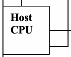
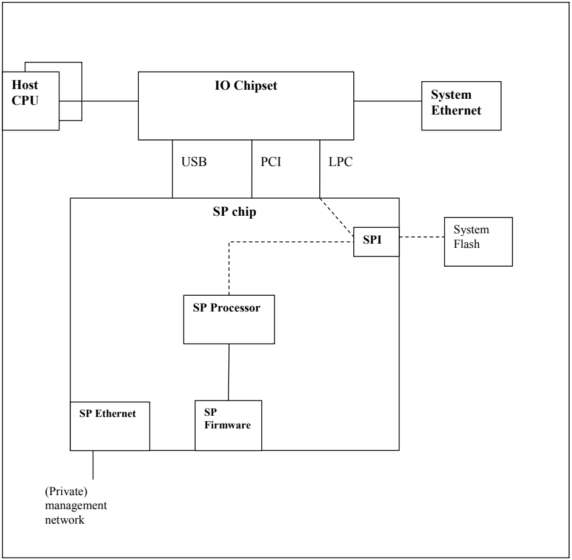
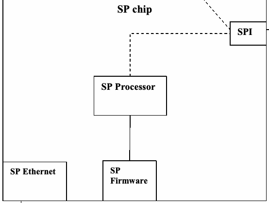
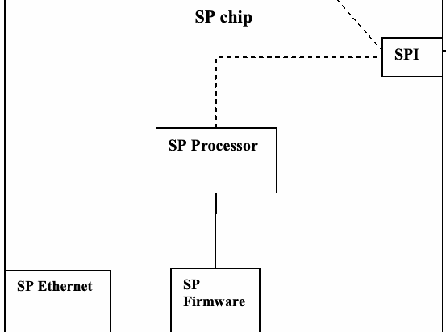
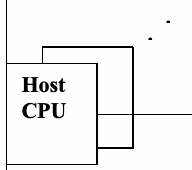
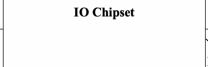
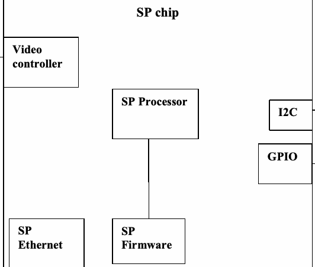
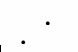
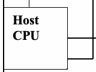

NIST Special Publication · PDF 原文抽出
BIOS Protection Guidelines for Servers
サーバー向けBIOS保護ガイドライン
NIST SP 800-147B（BIOS Protection Guidelines for Servers）の英文と日本語訳を段落ごとに並べた閲覧用ページです。サーバーのBIOS更新を保護し、不正または破損したファームウェアの実行を防ぐための要件と推奨事項を示します。 翻訳は非公式です。要件の確認にはNIST の正式版 PDFを参照してください。
PDF から抽出した原文は原本との照合待ちです。
PDF p.25: 二段組の可能性があるため読み順を原本と照合してください
PDF p.27: 二段組の可能性があるため読み順を原本と照合してください
NIST Special Publication 800-147B
NIST 特別刊行物800-147B
未レビュー訳BIOS Protection Guidelines
BIOS保護指針
未レビュー訳for Servers
サーバー向け
未レビュー訳Andrew Regenscheid
Andrew Regenscheid
未レビュー訳http://dx.doi.org/10.6028/NIST.SP.800-147B
http://dx.doi.org/10.6028/NIST.SP.800-147B
未レビュー訳C O M P U T E R S E C U R I T Y
コンピューターセキュリティ
未レビュー訳NIST Special Publication 800-147B
NIST 特別刊行物800-147B
未レビュー訳BIOS Protection Guidelines
BIOS保護指針
未レビュー訳for Servers
サーバー向け
未レビュー訳Andrew Regenscheid Computer Security Division
Andrew Regenscheid コンピューターセキュリティ部門
未レビュー訳Information Technology Laboratory
情報技術研究所
未レビュー訳This publication is available free of charge from: http://dx.doi.org/10.6028/NIST.SP.800-147B
本刊行物は次のURLから無料で入手できる：http://dx.doi.org/10.6028/NIST.SP.800-147B
未レビュー訳August 2014
2014年8月
未レビュー訳U.S. Department of Commerce Penny Pritzker, Secretary
米国商務省 Penny Pritzker長官
未レビュー訳National Institute of Standards and Technology
米国国立標準技術研究所
未レビュー訳Willie May, Acting Under Secretary of Commerce for Standards and Technology and Acting Director
Willie May、商務省標準技術担当次官代行兼所長代行
未レビュー訳Authority
権限
未レビュー訳This publication has been developed by NIST to further its statutory responsibilities under the Federal Information Security Management Act (FISMA), Public Law (P.L.) 107-347. NIST is responsible for developing information security standards and guidelines, including minimum requirements for Federal information systems, but such standards and guidelines shall not apply to national security systems without the express approval of appropriate Federal officials exercising policy authority over such systems. This guideline is consistent with the requirements of the Office of Management and Budget (OMB) Circular A-130, Section 8b(3), Securing Agency Information Systems, as analyzed in Circular A-130, Appendix IV: Analysis of Key Sections. Supplemental information is provided in Circular A-130, Appendix III, Security of Federal Automated Information Resources.
本刊行物は、連邦情報セキュリティ管理法（FISMA）、Public Law（P.L.）107-347に基づく法定責任を果たすため、NISTが作成した。NISTは、連邦情報システムの最低要件を含む情報セキュリティ標準および指針を策定する責任を負う。ただし、当該システムに関する政策権限を行使する適切な連邦当局者の明示的な承認がない限り、そのような標準および指針は国家安全保障システムには適用されない。本指針は、OMB通達A-130第8b(3)節「機関情報システムの保護」の要件と整合しており、通達A-130付録IV「主要節の分析」で分析されている。補足情報は通達A-130付録III「連邦自動化情報資源のセキュリティ」に記載されている。
未レビュー訳Nothing in this publication should be taken to contradict the standards and guidelines made mandatory and binding on Federal agencies by the Secretary of Commerce under statutory authority. Nor should these guidelines be interpreted as altering or superseding the existing authorities of the Secretary of Commerce, Director of the OMB, or any other Federal official. This publication may be used by nongovernmental organizations on a voluntary basis and is not subject to copyright in the United States. Attribution would, however, be appreciated by NIST.
本刊行物のいかなる記述も、法定権限に基づき商務長官が連邦機関に義務付け、拘束力を持たせた標準および指針に矛盾するものと解釈してはならない。また、本指針を、商務長官、OMB長官、その他の連邦当局者の既存の権限を変更または置き換えるものと解釈してはならない。本刊行物は、非政府組織が任意に利用でき、米国内では著作権の対象ではない。ただし、NISTへの帰属表示を歓迎する。
未レビュー訳National Institute of Standards and Technology Special Publication 800-147B Natl. Inst. Stand. Technol. Spec. Publ. 800-147B, 32 pages (August 2014) http://dx.doi.org/10.6028/NIST.SP.800-147B CODEN: NSPUE2
米国国立標準技術研究所 特別刊行物800-147B、National Institute of Standards and Technology、特別刊行物800-147B、32ページ（2014年8月）http://dx.doi.org/10.6028/NIST.SP.800-147B CODEN: NSPUE2
未レビュー訳This publication is available free of charge from: http://dx.doi.org/10.6028/NIST.SP.800-147B
本刊行物は次のURLから無料で入手できる：http://dx.doi.org/10.6028/NIST.SP.800-147B
未レビュー訳Certain commercial entities, equipment, or materials may be identified in this document in order to describe an experimental procedure or concept adequately. Such identification is not intended to imply recommendation or endorsement by NIST, nor is it intended to imply that the entities, materials, or equipment are necessarily the best available for the purpose. There may be references in this publication to other publications currently under development by NIST in accordance with its assigned statutory responsibilities. The information in this publication, including concepts and methodologies, may be used by Federal agencies even before the completion of such companion publications. Thus, until each publication is completed, current requirements, guidelines, and procedures, where they exist, remain operative. For planning and transition purposes, Federal agencies may wish to closely follow the development of these new publications by NIST. Organizations are encouraged to review all draft publications during public comment periods and provide feedback to NIST. All NIST Computer Security Division publications, other than the ones noted above, are available at http://csrc.nist.gov/publications.
実験手順または概念を十分に説明するため、本書では特定の商業事業体、機器、または材料を挙げる場合がある。このような記載は、NISTによる推奨または推奨承認を意味するものではなく、また当該事業体、材料、機器が目的に最適であることを意味するものでもない。本刊行物では、法定責任に従ってNISTが現在策定中の他の刊行物を参照する場合がある。本刊行物に記載された情報（概念および方法論を含む）は、関連刊行物の完成前であっても連邦機関が利用できる。したがって、各刊行物が完成するまでは、既存の要件、指針、手順が引き続き有効である。計画および移行の目的で、連邦機関はNISTによるこれら新刊行物の策定状況を注意深く確認してもよい。組織は、公開コメント期間中にすべての草案刊行物を確認し、NISTに意見を提出することが推奨される。上記以外のNISTコンピューターセキュリティ部門の刊行物は、http://csrc.nist.gov/publications. で入手できる。
未レビュー訳Comments on this publication may be submitted to: National Institute of Standards and Technology Attn: Computer Security Division, Information Technology Laboratory 100 Bureau Drive (Mail Stop 8930) Gaithersburg, MD 20899-8930 Email: 800-147comments@nist.gov
本刊行物に関するコメントの送付先：米国国立標準技術研究所 宛先：情報技術研究所コンピューターセキュリティ部門 100 Bureau Drive（Mail Stop 8930）Gaithersburg, MD 20899-8930 電子メール：800-147comments@nist.gov
未レビュー訳Reports on Computer Systems Technology
コンピューターシステム技術に関する報告書
未レビュー訳The Information Technology Laboratory (ITL) at the National Institute of Standards and Technology (NIST) promotes the U.S. economy and public welfare by providing technical leadership for the Nation’s measurement and standards infrastructure. ITL develops tests, test methods, reference data, proof of concept implementations, and technical analyses to advance the development and productive use of information technology. ITL’s responsibilities include the development of management, administrative, technical, and physical standards and guidelines for the cost-effective security and privacy of other than national security-related information in Federal information systems. The Special Publication 800-series reports on ITL’s research, guidelines, and outreach efforts in information system security, and its collaborative activities with industry, government, and academic organizations.
米国国立標準技術研究所（NIST）の情報技術研究所（ITL）は、国家の計測・標準インフラに技術的なリーダーシップを提供し、米国経済と公共の福祉を促進する。ITLは、情報技術の発展と生産的利用を推進するため、試験、試験方法、参照データ、概念実証の実装、技術分析を開発する。ITLの責務には、連邦情報システムにおける国家安全保障関連以外の情報の費用対効果に優れたセキュリティとプライバシーのための、管理、運用、技術、物理的な標準および指針の策定が含まれる。特別刊行物800シリーズは、情報システムセキュリティに関するITLの研究、指針、普及活動、および産業界、政府、学術機関との協力活動を報告する。
未レビュー訳Abstract
要旨
未レビュー訳Modern computers rely on fundamental system firmware, commonly known as the Basic Input/Output System (BIOS), to facilitate the hardware initialization process and transition control to the hypervisor or operating system. Unauthorized modification of BIOS firmware by malicious software constitutes a significant threat because of the BIOS’s unique and privileged position within the PC architecture. The guidelines in this document include requirements on servers to mitigate the execution of malicious or corrupt BIOS code. They apply to BIOS firmware stored in the BIOS flash, including the BIOS code, the cryptographic keys that are part of the Root of Trust for Update, and static BIOS data. This guide is intended to provide server platform vendors with recommendations and guidelines for a secure BIOS update process.
現代のコンピューターは、一般に基本入出力システム（BIOS）と呼ばれる基盤的なシステムファームウェアに依存し、ハードウェアの初期化処理を支援して制御をハイパーバイザーまたはオペレーティングシステムへ移行する。BIOSファームウェアはPCアーキテクチャ内で独自の特権的な位置を占めるため、悪意あるソフトウェアによる不正な改変は重大な脅威となる。本書の指針には、悪意ある、または破損したBIOSコードの実行を緩和するためのサーバー向け要件が含まれる。適用対象はBIOSフラッシュに保存されたBIOSファームウェアであり、BIOSコード、更新のためのルート・オブ・トラスト（RTU）を構成する暗号鍵、静的BIOSデータを含む。本指針は、サーバープラットフォームベンダーに安全なBIOS更新プロセスの推奨事項および指針を提供することを意図している。
未レビュー訳Keywords
キーワード
未レビュー訳Basic Input/Output System (BIOS); information security; patch management; server security; firmware; Root of Trust; Root of Trust for Update
基本入出力システム（BIOS）；情報セキュリティ；パッチ管理；サーバーセキュリティ；ファームウェア；ルート・オブ・トラスト；更新のためのルート・オブ・トラスト
未レビュー訳Acknowledgements
謝辞
未レビュー訳The author, Andrew Regenscheid of the National Institute of Standards and Technology (NIST), wishes to thank his colleagues who reviewed drafts of this document and contributed to its technical content. In particular, NIST appreciates the contributions from experts from industry and government who helped guide this work. These experts included Gary Simpson from AMD; Anthony Grieco, Bill Jacobs and Chirag Schroff from Cisco; Mukund Khatri and Frank Molsberry from Dell; Scott Dunham and Charles Palmer from IBM; and Lelia Barlow, Bob Hale and David Riss from Intel Corporation.
著者である米国国立標準技術研究所（NIST）のAndrew Regenscheidは、本書の草稿をレビューし、技術的内容に貢献した同僚に感謝する。特に、本作業の方向付けを支援した産業界および政府の専門家の貢献にNISTは謝意を表する。専門家には、AMDのGary Simpson、CiscoのAnthony Grieco、Bill Jacobs、Chirag Schroff、DellのMukund Khatri、Frank Molsberry、IBMのScott Dunham、Charles Palmer、Intel CorporationのLelia Barlow、Bob Hale、David Rissが含まれる。
未レビュー訳NIST would also like to acknowledge and thank Mike Boyle, Tom Broström, Bob Clemons, and Patrick Hagerty from the National Security Agency, who also provided substantial contributions to this document.
NISTはまた、本書に大きく貢献した国家安全保障局のMike Boyle、Tom Broström、Bob Clemons、Patrick Hagertyに謝意を表し、感謝する。
未レビュー訳Table of Contents
目次
未レビュー訳Executive Summary — 1
エグゼクティブサマリー — 1
未レビュー訳1. Introduction .................................................................................................................... 1-1
1. はじめに .................................................................................................................... 1-1
未レビュー訳1.1 Purpose and Scope................................................................................................1-1
1.1 目的と適用範囲................................................................................................1-1
未レビュー訳1.2 Audience ................................................................................................................1-1
1.2 対象読者 ............................................................................................................1-1
未レビュー訳1.3 Document Structure................................................................................................1-2
1.3 文書の構成..........................................................................................................1-2
未レビュー訳2. Background .................................................................................................................... 2-1
2. 背景 .......................................................................................................................... 2-1
未レビュー訳2.1 System BIOS..........................................................................................................2-1
2.1 システムBIOS.....................................................................................................2-1
未レビュー訳2.2 Server Architectures...............................................................................................2-1
2.2 サーバーアーキテクチャ...................................................................................2-1
未レビュー訳2.3 System BIOS Update Mechanisms.........................................................................2-2
2.3 システムBIOSの更新メカニズム......................................................................2-2
未レビュー訳2.4 Threats to the System BIOS ...................................................................................2-3
2.4 システムBIOSへの脅威 ....................................................................................2-3
未レビュー訳2.5 Root of Trust for Update .........................................................................................2-3
2.5 更新のためのルート・オブ・トラスト ............................................................2-3
未レビュー訳3. BIOS Security Principles ............................................................................................... 3-1
3. BIOSセキュリティ原則 ........................................................................................... 3-1
未レビュー訳3.1 BIOS Update Authentication...................................................................................3-1
3.1 BIOS更新の認証.................................................................................................3-1
未レビュー訳3.2 Secure Local Update..............................................................................................3-1
3.2 セキュアなローカル更新...................................................................................3-1
未レビュー訳3.3 Firmware Integrity Protection..................................................................................3-2
3.3 ファームウェア完全性保護................................................................................3-2
未レビュー訳3.4 Non-Bypassability...................................................................................................3-2
3.4 バイパス不可能性...............................................................................................3-2
未レビュー訳4. Security Guidelines by Update Mechanism.................................................................. 4-1
4. 更新メカニズム別のセキュリティ指針................................................................. 4-1
未レビュー訳4.1 Update Mechanism 1: Secure BIOS Update at Anytime .........................................4-1
4.1 更新メカニズム1：いつでも可能なセキュアBIOS更新 ..................................4-1
未レビュー訳4.2 Update Mechanism 2: Secure BIOS Update at Reboot ..........................................4-2
4.2 更新メカニズム2：再起動時のセキュアBIOS更新 ........................................4-2
未レビュー訳4.3 Update Mechanism 3: Secure BIOS Update Requiring Verification at Boot ............4-2
4.3 更新メカニズム3：起動時の検証を要するセキュアBIOS更新 .......................4-2
未レビュー訳5. Guidelines for Service Processors ............................................................................... 5-1
5. サービスプロセッサーに関する指針 ..................................................................... 5-1
未レビュー訳5.1 Service Processor as a Root of Trust .....................................................................5-1
5.1 信頼基点としてのサービスプロセッサー ........................................................5-1
未レビュー訳5.2 Non-Bypassability of BIOS Protections by Service Processor ................................5-1
5.2 サービスプロセッサーによるBIOS保護のバイパス不可能性 .........................5-1
未レビュー訳List of Appendices
付録一覧
未レビュー訳Appendix A— Summary of Requirements ..........................................................................A-1
付録A—要件の概要 ........................................................................................................A-1
未レビュー訳Appendix B— Example of Update Mechanism 1 ................................................................B-1
付録B—更新メカニズム1の例 .....................................................................................B-1
未レビュー訳Appendix C— Example of Update Mechanism 2 ................................................................C-1
付録C—更新メカニズム2の例 .....................................................................................C-1
未レビュー訳Appendix D— Example of Update Mechanism 3 ................................................................D-1
付録D—更新メカニズム3の例 .....................................................................................D-1
未レビュー訳Appendix E— Glossary ........................................................................................................E-1
付録E—用語集 ...............................................................................................................E-1
未レビュー訳Appendix F— Acronyms and Abbreviations....................................................................... F-1
付録F—頭字語および略語............................................................................................F-1
未レビュー訳Appendix G— References ....................................................................................................G-1
付録G—参考文献 ...........................................................................................................G-1
未レビュー訳Executive Summary
エグゼクティブサマリー
未レビュー訳Modern computers rely on fundamental system firmware, commonly known as the Basic Input/Output System (BIOS), to facilitate the hardware initialization process and transition control to the hypervisor or operating system. The BIOS is typically developed by both original equipment manufacturers (OEMs) and independent BIOS vendors, and is distributed to end-users by motherboard or computer manufacturers. Manufacturers frequently update system firmware to fix bugs, patch vulnerabilities, and support new hardware. This document is the second in a series of publications on BIOS protections. The first document, SP800-147, BIOS Protection Guidelines, was released in April 2011 and provides guidelines for desktop and laptop systems deployed in enterprise environments.
現代のコンピューターは、一般に基本入出力システム（BIOS）と呼ばれる基盤的なシステムファームウェアに依存し、ハードウェアの初期化処理を支援して制御をハイパーバイザーまたはオペレーティングシステムへ移行する。BIOSは通常、相手先ブランド製造業者（OEM）と独立系BIOSベンダーの双方によって開発され、マザーボードまたはコンピューターメーカーからエンドユーザーに配布される。メーカーはバグ修正、脆弱性へのパッチ適用、新しいハードウェアの支援のため、システムファームウェアを頻繁に更新する。本書はBIOS保護に関する一連の刊行物の第2巻である。第1巻のSP 800-147『BIOS保護指針』は2011年4月に公開され、企業環境に導入されるデスクトップおよびノートパソコン向けの指針を示す。
未レビュー訳Unauthorized modification of BIOS firmware by malicious software constitutes a significant threat because of the BIOS’s unique and privileged position within modern computing architectures. Malicious BIOS modification could be part of a sophisticated, targeted attack on an organization—either a permanent denial of service or a persistent malware presence.
BIOSファームウェアは現代のコンピューティングアーキテクチャ内で独自の特権的な位置を占めるため、悪意あるソフトウェアによる不正な改変は重大な脅威となる。悪意あるBIOS改変は、組織を標的とした高度な攻撃の一部となる可能性があり、永続的なサービス拒否、またはマルウェアの持続的な存在につながり得る。
未レビュー訳This document covers BIOS protections for basic, managed and blade servers. These types of servers often contain Service Processors—specialized microcontrollers that provide administrators with an interface to manage the host server. Servers, particularly those with Service Processors, may implement multiple BIOS update mechanisms. Servers implementing a single BIOS update mechanism may implement the guidelines in SP800-147, if the update mechanism is sufficiently similar to those in PC client systems, or they may implement the guidelines in this document.
本書は、基本サーバー、管理サーバー、ブレードサーバーのBIOS保護を扱う。これらの種類のサーバーには、管理者がホストサーバーを管理するためのインターフェースを提供する特殊なマイクロコントローラーであるサービスプロセッサーが搭載されていることが多い。特にサービスプロセッサー搭載サーバーでは、複数のBIOS更新メカニズムを実装している場合がある。BIOS更新メカニズムが1つのサーバーでは、そのメカニズムがPCクライアントシステムのものと十分類似している場合、SP 800-147の指針を実装してもよく、本書の指針を実装してもよい。
未レビュー訳The security guidelines in this publication do not attempt to prevent installation of an inauthentic BIOS through the supply chain, by physical replacement of the BIOS chip, or through secure local update procedures.
本刊行物のセキュリティ指針は、サプライチェーン経由の真正でないBIOSのインストール、BIOSチップの物理的交換、またはセキュアなローカル更新手順を防止しようとするものではない。
未レビュー訳Security guidelines are specified for four system BIOS security features: Authenticated BIOS update mechanisms, where digital signatures prevent the execution of
4つのシステムBIOSセキュリティ機能について、セキュリティ指針を定める。 認証済みBIOS更新メカニズム。デジタル署名によって真正でないBIOS更新イメージの実行を防止する。
未レビュー訳BIOS update images that are not authentic. An optional secure local update mechanism, which requires that an administrator be physically present at the machine in order to install BIOS images without signature verification. Firmware integrity protections, to prevent unintended or malicious modification of the BIOS outside the authenticated BIOS update process. Non-bypassability features, to ensure that there are no mechanisms that allow the main processor or any other system component to bypass the BIOS protections.
任意のセキュアなローカル更新メカニズム。署名検証なしでBIOSイメージをインストールするため、管理者が物理的にマシンの前にいることを要求する。 ファームウェア完全性保護。認証済みBIOS更新プロセス以外でBIOSが意図せず、または悪意を持って改変されることを防止する。 バイパス不可能性機能。メインプロセッサーまたはその他のシステム構成要素がBIOS保護を回避できるメカニズムが存在しないことを確保する。
未レビュー訳This document also provides additional information and recommendations for implementing BIOS protections using three BIOS update mechanisms that are commonly implemented in servers. This material is intended to help implementers design systems that meet the security requirements in this publication.
本書はまた、サーバーで一般的に実装される3つのBIOS更新メカニズムを用いてBIOS保護を実装するための追加情報と推奨事項を示す。この内容は、本刊行物のセキュリティ要件を満たすシステムの設計を実装担当者が行えるよう支援することを意図している。
未レビュー訳Service Processors are critical management components in many modern server designs. They are responsible for various management features, depending on the implementation of the system. Some, but not all, Service Processors are able to update the system BIOS. This document describes the possible roles of Service Processors in the system BIOS update process, and describes how the security guidelines apply to systems containing these components.
サービスプロセッサーは、多くの現代的なサーバー設計において重要な管理構成要素である。システムの実装に応じて、さまざまな管理機能を担う。一部のサービスプロセッサーはシステムBIOSを更新できるが、すべてが可能なわけではない。本書は、システムBIOS更新プロセスにおけるサービスプロセッサーの役割の可能性を説明し、これらの構成要素を含むシステムにセキュリティ指針がどのように適用されるかを記述する。
未レビュー訳ES-1
ES-1
未レビュー訳1. Introduction
1. はじめに
未レビュー訳1.1 Purpose and Scope
1.1 目的と適用範囲
未レビュー訳This document provides guidelines for BIOS protections in server-class systems. It is the second in a series of publications on BIOS protections. The first document, SP800-147, BIOS Protection Guidelines, was released in April 2011 and provides guidelines for desktop and laptop systems deployed in enterprise environments.
本書はサーバークラスのシステムにおけるBIOS保護指針を示す。BIOS保護に関する一連の刊行物の第2巻である。第1巻のSP 800-147『BIOS保護指針』は2011年4月に公開され、企業環境に導入されるデスクトップおよびノートパソコン向けの指針を示す。
未レビュー訳Unauthorized modification of BIOS firmware by malicious software constitutes a significant threat because of the BIOS’s unique and privileged position within modern computer system architectures. Malicious BIOS modification could be part of a sophisticated, targeted attack on an organization—either a permanent denial of service (if the BIOS is corrupted) or a persistent malware presence (if the BIOS is implanted with malware).
BIOSファームウェアは現代のコンピューターシステムアーキテクチャ内で独自の特権的な位置を占めるため、悪意あるソフトウェアによる不正な改変は重大な脅威となる。悪意あるBIOS改変は、組織を標的とした高度な攻撃の一部となる可能性があり、永続的なサービス拒否（BIOSが破損した場合）またはマルウェアの持続的な存在（BIOSにマルウェアが埋め込まれた場合）につながり得る。
未レビュー訳The three core principles of BIOS protection outlined in NIST SP 800-147 for client systems— authenticated firmware updates, integrity protection, and non-bypassability of protection mechanisms— apply to server-class machines. However, the architectural and operational complexity in servers due to the need to remotely manage them makes it more difficult to implement BIOS security protections in the same manner as clients; the core reason for the increased difficulty is that servers typically possess multiple BIOS update mechanisms. In addition, some servers have one or more Service Processors (SPs). SPs perform various management functions for the hosts, which may include BIOS updates. This introduces the SP as a security-critical component, and thus this document includes guidelines for SPs that are part of the BIOS update process.
NIST SP 800-147でクライアントシステム向けに概説されたBIOS保護の3つの中核原則、すなわち認証済みファームウェア更新、完全性保護、保護メカニズムのバイパス不可能性は、サーバークラスのマシンにも適用される。ただし、サーバーを遠隔管理する必要があるため、サーバーのアーキテクチャおよび運用は複雑であり、クライアントと同じ方法でBIOSセキュリティ保護を実装することが難しい。難しさが増す主な理由は、サーバーが通常複数のBIOS更新メカニズムを備えることである。さらに、一部のサーバーには1つ以上のサービスプロセッサー（SP）がある。SPはホスト向けのさまざまな管理機能を実行し、BIOS更新を含む場合がある。これによりSPはセキュリティ上重要な構成要素となるため、本書にはBIOS更新プロセスに関与するSP向けの指針も含まれる。
未レビュー訳Boot firmware refers to software or firmware used to facilitate the hardware initialization process and transition control to the hypervisor or operating system. This publication uses the term BIOS as a generic, recognized term for system boot firmware in servers, including, but not limited to, boot firmware based on conventional BIOS, Extensible Firmware Interface (EFI) BIOS, and Unified Extensible Firmware Interface (UEFI) BIOS. The guidelines in this document include requirements on servers to mitigate the execution of malicious or corrupt BIOS code. They apply to BIOS firmware stored in the BIOS flash memory, including the BIOS code, the cryptographic keys that are part of the Root of Trust for Update (RTU), and static BIOS data. Device firmware that is stored with the system BIOS firmware and is updated by the same mechanism is considered part of the BIOS for the purposes of this document (e.g., Option ROMs embedded in the BIOS flash). These guidelines do not apply to other device firmware or Option ROMs stored elsewhere in a server, such as on an option card itself.
ブートファームウェアとは、ハードウェア初期化処理を支援し、制御をハイパーバイザーまたはオペレーティングシステムへ移行するために用いるソフトウェアまたはファームウェアである。本刊行物では、サーバーのシステムブートファームウェアを指す一般的で広く認識された用語としてBIOSを用いる。これには、従来型BIOS、拡張ファームウェアインターフェース（EFI）BIOS、統合拡張ファームウェアインターフェース（UEFI）BIOSに基づくブートファームウェアが含まれるが、これらに限定されない。本書の指針には、悪意ある、または破損したBIOSコードの実行を緩和するためのサーバー向け要件が含まれる。適用対象はBIOSフラッシュメモリーに保存されたBIOSファームウェアであり、BIOSコード、更新のためのルート・オブ・トラスト（RTU）を構成する暗号鍵、静的BIOSデータを含む。システムBIOSファームウェアとともに保存され、同じメカニズムで更新されるデバイスファームウェアは、本書の目的上BIOSの一部とみなす（例：BIOSフラッシュに組み込まれたオプションROM）。これらの指針は、サーバー内の他の場所（オプションカード自体など）に保存されるその他のデバイスファームウェアやオプションROMには適用されない。
未レビュー訳This guide is intended to provide server platform vendors with recommendations and guidelines for a secure BIOS update process. System administrators should consult Section 3.2 of NIST SP 800-147 for recommended best practices for managing BIOS in client and server systems.
本ガイドは、安全なBIOS更新プロセスに関する推奨事項と指針をサーバープラットフォームのベンダーに示すことを目的とする。クライアントシステムおよびサーバーシステムのBIOS管理に関する推奨ベストプラクティスについては、システム管理者はNIST SP 800-147の3.2節を参照することが望ましい。
未レビュー訳1.2 Audience
1.2 対象読者
未レビュー訳The intended audience for this document includes BIOS and platform vendors of server-class systems, and information system security professionals who are responsible for managing the servers’ security. The material may also be of use when developing enterprise-wide procurement strategies and deployment.
本書の対象読者には、サーバークラスシステムのBIOSおよびプラットフォームベンダーと、サーバーのセキュリティ管理を担当する情報システムセキュリティ専門家が含まれる。本書の内容は、全社的な調達戦略や導入戦略の策定にも役立つ場合がある。
未レビュー訳The material in this document is technically oriented, and it is assumed that readers have at least a basic understanding of system and network security. The document provides background information to help
本書の内容は技術的なものであり、読者がシステムおよびネットワークセキュリティの基本的な知識を少なくとも有していることを前提とする。本書は、取り上げるトピックの理解を助けるために背景情報を提供する。
未レビュー訳1-1 such readers understand the topics that are discussed. Readers are encouraged to take advantage of other resources (including those listed in this document) for more detailed information.
そのような読者は、より詳細な情報を得るため、他の資料（本書に掲載する資料を含む）も活用することが推奨される。
未レビュー訳1.3 Document Structure
1.3 文書の構成
未レビュー訳The remainder of this document is organized into the following major sections:
本書の残りの部分は、次の主要な節で構成される。
未レビュー訳 Section 2 presents an overview of the BIOS, describes server architectures and update mechanisms, identifies potential threats to BIOS in servers, and explains the Root of Trust for Update.
第2節では、BIOSの概要を示し、サーバーアーキテクチャと更新メカニズムを説明し、サーバーのBIOSに対する潜在的な脅威を特定するとともに、更新用Root of Trustについて説明する。
未レビュー訳 Section 3 identifies security controls for BIOS implementations that are required or recommended to mitigate threats to BIOS in servers.
第3節では、サーバーのBIOSに対する脅威を軽減するために必要または推奨される、BIOS実装のセキュリティ管理策を特定する。
未レビュー訳 Section 4 provides additional security guidelines for each of the three update mechanisms.
第4節では、3種類の更新メカニズムそれぞれに対する追加のセキュリティ指針を示す。
未レビュー訳 Section 5 provides additional security guidelines for Service Processors.
第5節では、サービスプロセッサに関する追加のセキュリティ指針を示す。
未レビュー訳The document also contains appendices with supporting material:
本書には、参考資料を収めた付録も含まれる。
未レビュー訳 Appendix A contains a summary of the security guidelines for system BIOS implementations.
付録Aには、システムBIOS実装のセキュリティ指針の要約を示す。
未レビュー訳 Appendices B, C, and D describe examples of possible system designs for implementing the BIOS protections in servers.
付録B、C、Dでは、サーバーでBIOS保護を実装するためのシステム設計例を示す。
未レビュー訳 Appendix E defines terms used in this document.
付録Eでは、本書で使用する用語を定義する。
未レビュー訳 Appendix F contains a list of acronyms and abbreviations used in this document.
付録Fには、本書で使用する頭字語と略語を掲載する。
未レビュー訳 Appendix G contains a list of references used in the development of this document.
付録Gには、本書の作成に使用した参考文献を掲載する。
未レビュー訳1-2
1-2
未レビュー訳2. Background
2. 背景
未レビュー訳This section provides background information on the system BIOS and types of server architectures. It identifies the primary methods used for updating the system BIOS, and it also discusses security issues and threats to the system BIOS. Finally, it discusses Root of Trust for Update components.
本節では、システムBIOSおよびサーバーアーキテクチャの種類について背景情報を示す。システムBIOSの更新に使用する主な方法を特定し、システムBIOSのセキュリティ上の問題と脅威についても論じる。最後に、更新用Root of Trustの構成要素について説明する。
未レビュー訳2.1 System BIOS
2.1 システムBIOS
未レビュー訳Exclusive of certain configuration and security code that may be embedded into a platform’s silicon components, e.g., processor, the system BIOS is the first software executed on the main central processing unit (CPU) when a computer is powered on. While the system BIOS was originally responsible for providing operating systems access to hardware, its primary role on modern machines is to initialize and test hardware components and load the operating system. In addition, the BIOS loads and initializes important system management functions, such as power and thermal management. The system BIOS may also load CPU microcode patches during the boot process.
プラットフォームのプロセッサなどのシリコン部品に組み込まれる一部の構成・セキュリティコードを除き、システムBIOSは、コンピューターの電源投入時にメインの中央処理装置（CPU）が最初に実行するソフトウェアである。システムBIOSは当初、オペレーティングシステムからハードウェアにアクセスする機能を担っていたが、現代のコンピューターでは主にハードウェア構成要素の初期化と試験、およびオペレーティングシステムの読み込みを行う。また、電源管理や熱管理などの重要なシステム管理機能を読み込んで初期化する。システムBIOSは、起動プロセス中にCPUマイクロコードのパッチを読み込む場合もある。
未レビュー訳There are several different types of BIOS firmware. Some computers use a 16-bit conventional BIOS, while many newer systems use boot firmware based on the UEFI specifications [UEFI], or use other customized boot firmware. In this document we refer to all types of boot firmware as BIOS firmware, the system BIOS, or simply BIOS. When necessary, we differentiate conventional BIOS firmware from UEFI firmware by calling them the conventional BIOS and UEFI BIOS, respectively.
BIOSファームウェアにはいくつかの種類がある。一部のコンピューターは16ビットの従来型BIOSを使用する一方、新しいシステムの多くはUEFI仕様[UEFI]に基づく起動ファームウェアや、その他のカスタマイズされた起動ファームウェアを使用する。本書では、あらゆる種類の起動ファームウェアをBIOSファームウェア、システムBIOS、または単にBIOSと呼ぶ。従来型BIOSファームウェアとUEFIファームウェアを区別する必要がある場合は、それぞれ従来型BIOSおよびUEFI BIOSと呼ぶ。
未レビュー訳System BIOS is typically developed by the original equipment manufacturer (OEM) of the server. Manufacturers frequently update system firmware to fix bugs, patch vulnerabilities, and support new hardware. The system BIOS is typically stored on electrically erasable programmable read-only memory (EEPROM) or other forms of flash memory. Typically, system BIOS firmware is updated using a utility or tool that has special knowledge of the non-volatile storage components in which the BIOS is stored. This tool may run on one of the CPUs in the server itself, or it could run on a management processor within the server chassis.
システムBIOSは通常、サーバーの相手先ブランド製造業者（OEM）が開発する。製造業者は、バグの修正、脆弱性へのパッチ適用、新しいハードウェアへの対応のため、システムファームウェアを頻繁に更新する。システムBIOSは通常、電気的消去可能プログラマブル読み取り専用メモリ（EEPROM）または他の種類のフラッシュメモリに保存される。通常、BIOSが保存されている不揮発性記憶部品を特別に扱うユーティリティまたはツールを用いて、システムBIOSファームウェアを更新する。このツールはサーバー自体のCPUのいずれかで動作する場合も、サーバー筐体内の管理プロセッサ上で動作する場合もある。
未レビュー訳A given computer system can have BIOS in several different locations. In addition to the motherboard, BIOS may be found on hard drive controllers, video cards, network cards and other add-in cards. This additional firmware generally takes the form of Option ROMs (containing conventional BIOS and/or UEFI drivers). These are loaded by the system firmware during the boot process and executed on the host CPU. Option ROMs should not be confused with device firmware; there are many system devices in a server with microcontrollers that run their own firmware.
1台のコンピューターシステム内でも、BIOSは複数の場所に存在することがある。マザーボードに加え、ハードディスクコントローラー、ビデオカード、ネットワークカード、その他の増設カードにもBIOSが存在する場合がある。こうした追加ファームウェアは一般に、オプションROM（従来型BIOSドライバーおよび／またはUEFIドライバーを含む）として実装される。これらは起動プロセス中にシステムファームウェアによって読み込まれ、ホストCPUで実行される。オプションROMをデバイスファームウェアと混同してはならない。サーバーには、独自のファームウェアを実行するマイクロコントローラーを備えたシステムデバイスが多数存在する。
未レビュー訳The guidelines in this document apply to BIOS firmware stored in the BIOS flash memory, including the BIOS code, the cryptographic keys that are part of the Root of Trust for Update, and static BIOS data. Option ROMs that are stored with the system BIOS firmware and are updated by the same mechanism are considered part of the BIOS for the purposes of this document. However, the guidelines do not apply to Option ROMs and other device firmware stored elsewhere in a server, such as on an add-on card.
本書の指針は、BIOSコード、更新用Root of Trustを構成する暗号鍵、および静的なBIOSデータを含め、BIOSフラッシュメモリに保存されたBIOSファームウェアに適用される。システムBIOSファームウェアとともに保存され、同じメカニズムで更新されるオプションROMは、本書の目的上、BIOSの一部とみなす。ただし、本書の指針は、増設カード上など、サーバー内の別の場所に保存されるオプションROMやその他のデバイスファームウェアには適用されない。
未レビュー訳For more information on system BIOS fundamentals, see Section 2 of NIST SP 800-147.
システムBIOSの基礎情報については、NIST SP 800-147の第2節を参照する。
未レビュー訳2.2 Server Architectures
2.2 サーバーアーキテクチャ
未レビュー訳In this subsection, we differentiate servers into three classes: Basic Servers, Managed Servers, and Blade Servers. The distinctions made here have to do with the mechanisms employed to update the system
本小節では、サーバーをベーシックサーバー、マネージドサーバー、ブレードサーバーの3種類に分類する。ここでの区別は、システムの更新に用いられるメカニズム、特にシステムBIOSを更新するメカニズムに関するものである。
未レビュー訳BIOS.
BIOS。
未レビュー訳2-1
2-1
未レビュー訳A Basic Server is architecturally similar to a client PC system with a single BIOS update mechanism. The requirements for protecting BIOS updates for a Basic Server can be satisfied by meeting the requirements listed in this document or those in Section 3.1 of NIST SP 800-147. Typically the Root of Trust for Update (RTU) on a Basic Server is part of the system BIOS (see Section 2.5 for more on RTUs).
ベーシックサーバーは、BIOS更新メカニズムを1つ備えるクライアントPCシステムにアーキテクチャ上類似している。ベーシックサーバーのBIOS更新を保護する要件は、本書に記載された要件、またはNIST SP 800-147の3.1節に記載された要件を満たすことで達成できる。通常、ベーシックサーバーの更新用Root of Trust（RTU）はシステムBIOSの一部である（RTUの詳細は2.5節を参照）。
未レビュー訳A Managed Server is a computer system with a dedicated management channel used for device maintenance and additional server management features. In addition to host processors, a Managed Server may have a Service Processor (see below) capable of performing system management, possibly including BIOS updates. It is critical to prevent the execution of malicious or corrupt code on the Service Processor since it has direct control over other operational aspects of the server. As a potential BIOS update mechanism, the code executed on the Service Processor may contain an RTU and must be protected from unauthorized modification.
マネージドサーバーは、デバイス保守やサーバー管理機能のための専用管理チャネルを備えたコンピューターシステムである。ホストプロセッサに加え、マネージドサーバーは、BIOS更新を含むシステム管理を実行できるサービスプロセッサ（後述）を備える場合がある。サービスプロセッサはサーバーの他の運用面を直接制御するため、悪意あるコードまたは破損したコードの実行を防ぐことが重要である。BIOS更新メカニズムとなる可能性があるサービスプロセッサ上のコードは、RTUを含む場合があり、不正な変更から保護しなければならない。
未レビュー訳A Blade Server is a specialized server hardware platform design that is configured as a mounted device in a chassis/enclosure that can be installed in a rack system. These platforms often have shared power and cooling and a shared management interface. Blades function either autonomously in a chassis/enclosure/rack as a bank of servers or they may be controlled by a central bus manager. This system configuration also may have multiple paths for updating the BIOS used to run the individual blades. From the BIOS update perspective, a Blade Server is typically similar to a managed server. Industry also uses the term multi-node (or modular) servers which have the same requirements as the Blade Servers for BIOS protections.
ブレードサーバーは、ラックシステムに設置できるシャーシ／筐体内に搭載するよう構成された、特殊なサーバーハードウェアプラットフォームである。これらのプラットフォームでは、電源と冷却、および管理インターフェースを共有することが多い。ブレードは、シャーシ／筐体／ラック内で自律的なサーバー群として動作する場合と、中央バスマネージャーで制御される場合がある。このシステム構成では、個々のブレードを動作させるBIOSを更新する経路が複数存在する場合もある。BIOS更新の観点では、ブレードサーバーは通常マネージドサーバーに類似する。業界ではマルチノード（またはモジュラー）サーバーという用語も使われ、BIOS保護についてはブレードサーバーと同じ要件が適用される。
未レビュー訳Server architectures vary greatly. While most servers fit into one of the classes list above, in some cases it may be difficult to classify a server as strictly belonging to one of those classes. The classes are provided as examples to help clarify requirements, however the security guidelines in this document are intended to have broad applicability to any type of server.
サーバーアーキテクチャには大きな違いがある。ほとんどのサーバーは上記のいずれかの種類に当てはまるが、厳密に分類することが難しい場合もある。これらの種類は要件を明確にするための例であるが、本書のセキュリティ指針はあらゆる種類のサーバーに幅広く適用することを意図している。
未レビュー訳A server may have a Service Processor, sometimes called a Baseboard Management Controller, which is a specialized microcontroller. The Service Processor is often a special add-in card or embedded on the server motherboard. The Service Processor microcontroller runs a specialized operating system typically stored in flash memory, and provides administrators with an interface to manage the host server. The Service Processor is typically a highly privileged component in modern servers, often capable of updating firmware and software on the system, changing configuration settings, and reading from system memory. This document assumes administrators will implement proper computer, network, and physical security controls to mitigate the unique risks to Service Processors. For instance, typically administrators interact with the Service Processor over a network interface. Security best practices dictate that the Service Processor should be on a private LAN accessible only to system administrators.
サーバーは、専用マイクロコントローラーであるサービスプロセッサを備える場合があり、ベースボード管理コントローラーと呼ばれることもある。サービスプロセッサは、多くの場合、専用の増設カードであるか、サーバーのマザーボードに組み込まれている。サービスプロセッサのマイクロコントローラーは通常フラッシュメモリに保存された専用OSを実行し、管理者にホストサーバーを管理するためのインターフェースを提供する。現代のサーバーにおいてサービスプロセッサは非常に高い権限を持つ構成要素であり、システム上のファームウェアやソフトウェアの更新、構成設定の変更、システムメモリの読み取りを行える場合が多い。本書は、管理者がサービスプロセッサ固有のリスクを軽減するため、適切なコンピューター、ネットワークおよび物理セキュリティ管理策を実装することを前提とする。たとえば、管理者は通常ネットワークインターフェース経由でサービスプロセッサを操作する。セキュリティのベストプラクティスでは、サービスプロセッサをシステム管理者だけがアクセスできるプライベートLANに接続する。
未レビュー訳Service Processors are responsible for various features, depending on the implementation of the system. The Service Processor will typically monitor various sensors in the server, such as temperature and power sensors for thermal and power management. It might provide administrators with a mechanism to update software or firmware on the server and host operating system. Maintaining the security of the Service Processor is critical to maintaining the integrity and availability of the server. See Section 5 for security requirements for Service Processors.
サービスプロセッサは、システムの実装に応じてさまざまな機能を担う。通常は、熱管理や電力管理のため、温度センサーや電力センサーなど、サーバー内の各種センサーを監視する。また、サーバーやホストOS上のソフトウェアまたはファームウェアを更新する手段を管理者に提供することもある。サーバーの完全性と可用性を維持するには、サービスプロセッサのセキュリティを維持することが重要である。サービスプロセッサのセキュリティ要件は第5節を参照する。
未レビュー訳2.3 System BIOS Update Mechanisms
2.3 システムBIOSの更新メカニズム
未レビュー訳The guidelines in this publication are intended to secure BIOS update mechanisms so that only authentic, authorized BIOS images are written to BIOS flash memory, a process sometimes referred to as “flashing” the image. While client systems typically only have one path for updating the BIOS, server systems may implement several update mechanisms to allow administrators to update the BIOS from different
本刊行物の指針は、真正で認可されたBIOSイメージだけがBIOSフラッシュメモリに書き込まれるようにBIOS更新メカニズムを保護することを目的とする。この処理は、イメージの「フラッシュ」と呼ばれることもある。クライアントシステムでは通常、BIOS更新経路は1つだけだが、サーバーシステムでは、管理者が異なる
未レビュー訳2-2 environments. This publication identifies three general types of authenticated BIOS update mechanisms. A server will typically implement one or more of these update mechanisms. Each mechanism is briefly described below:
2-2 環境からBIOSを更新できるよう、複数の更新メカニズムを実装する場合がある。本刊行物では、認証付きBIOS更新メカニズムを大きく3種類に分類する。サーバーには通常、これらの更新メカニズムのうち1つ以上が実装される。それぞれのメカニズムについて、以下に簡単に説明する。
未レビュー訳 Update Mechanism 1 – Authenticated BIOS update that can occur anytime. This update mechanism allows the BIOS flash memory to be securely updated irrespective of the operating state of the server. This includes being able to update the BIOS flash while the server operates, without requiring a reboot. This mechanism must protect the BIOS flash memory from unauthorized modifications. Update Mechanism 2 – Authenticated BIOS update on reboot. This BIOS update mechanism allows the flash process to be initiated during server runtime, but the actual update of the BIOS flash memory does not occur until the system reboots. Like the previous mechanism, this mechanism must protect the BIOS flash memory from unauthorized modifications. Update Mechanism 3 – BIOS update at runtime and verification of BIOS on reboot. With this BIOS update mechanism, the BIOS is verified to be authentic before it is executed on every boot. This mechanism is necessary if the BIOS flash locking mechanism is inadequate to protect the integrity of a running system’s BIOS flash memory. If the BIOS flash memory is determined to be inauthentic during boot, a recovery process is initiated and the inauthentic BIOS is not executed.
更新メカニズム1—認証済みBIOSの随時更新。この更新メカニズムでは、サーバーの動作状態にかかわらずBIOSフラッシュメモリを安全に更新できる。サーバーの稼働中に、再起動せずBIOSフラッシュを更新することもできる。このメカニズムは、BIOSフラッシュメモリを不正な改変から保護しなければならない。 更新メカニズム2—再起動時の認証済みBIOS更新。このBIOS更新メカニズムでは、サーバーの稼働中にフラッシュ処理を開始できるが、BIOSフラッシュメモリの実際の更新はシステムの再起動まで行われない。前述のメカニズムと同様に、このメカニズムはBIOSフラッシュメモリを不正な改変から保護しなければならない。 更新メカニズム3—稼働中にBIOSを更新し、再起動時にBIOSを検証する。このBIOS更新メカニズムでは、BIOSは起動のたびに実行前に真正性を検証される。BIOSフラッシュロック機構が、稼働中のシステムのBIOSフラッシュメモリの完全性を保護するには不十分な場合に、このメカニズムが必要となる。起動時にBIOSフラッシュメモリが真正でないと判定された場合、復旧処理が開始され、真正でないBIOSは実行されない。
未レビュー訳In addition, some servers may include a secure local update mechanism that updates the system BIOS without using any of the three authenticated update mechanisms discussed above. A secure local update mechanism ensures the authenticity and integrity of the BIOS update image by requiring that an administrator be physically present at the server to conduct the update. The requirement for physical presence mitigates the risk of remote attacks against the system BIOS.
さらに、一部のサーバーには、前述の三つの認証済み更新メカニズムを使わずにシステムBIOSを更新するセキュアなローカル更新メカニズムが含まれる場合がある。セキュアなローカル更新メカニズムでは、更新を実施する管理者がサーバーの物理的な場所に立ち会うことを必須とすることで、BIOS更新イメージの真正性と完全性を確保する。物理的な立ち会いを求めることで、システムBIOSを狙うリモート攻撃のリスクを軽減する。
未レビュー訳2.4 Threats to the System BIOS
2.4 システムBIOSに対する脅威
未レビュー訳A server is susceptible to the same forms of attack that threaten a client system. Execution of operating system-level malware on servers could precede a BIOS attack. Server BIOS updates that are executed without being authenticated as coming from a trusted source are vulnerable to attacks. Since servers may have multiple BIOS update mechanisms, each mechanism has a risk of vulnerability. The interaction between update mechanisms potentially can also introduce vulnerabilities.
サーバーは、クライアントシステムを脅かすものと同じ攻撃形態にさらされる。サーバー上でオペレーティングシステムレベルのマルウェアが実行され、その後にBIOS攻撃が行われる場合がある。信頼できる送信元からのものであることを認証せずに実行されるサーバーBIOS更新は、攻撃に対して脆弱である。サーバーには複数のBIOS更新メカニズムがある場合があるため、それぞれのメカニズムに脆弱性のリスクがある。更新メカニズム間の相互作用によっても、脆弱性が生じる可能性がある。
未レビュー訳The Service Processor in servers has elevated privileges to perform system management, which may include modifying BIOS. While the Service Processor might be controlled through an isolated communication channel, unauthorized access to this channel exposes great risk to the server. While many security practices focus on the data network, the management network might be less vetted and less protected without special efforts.
サーバーのサービスプロセッサは、システム管理を行うための高い権限を持っており、その管理にはBIOSの変更が含まれる場合がある。サービスプロセッサは隔離された通信チャネルを通じて制御されることがあるが、このチャネルへの不正アクセスはサーバーに大きなリスクをもたらす。多くのセキュリティ対策はデータネットワークに重点を置く一方、特別な対策を講じなければ、管理ネットワークの審査や保護が不十分な場合がある。
未レビュー訳If insufficiently protected, BIOS image backups on servers (often maintained for recovery features) are vulnerable to rewrite attacks even while the primary BIOS is protected from modification. Subsequent to successful subversion of a BIOS backup, an adversary could employ other means to cause the server to reboot with the infected backup image.
十分に保護されていない場合、サーバーのBIOSイメージのバックアップ（多くの場合、復旧機能のために保持される）は、プライマリBIOSが改変から保護されていても、書き換え攻撃に対して脆弱である。BIOSバックアップの侵害に成功した攻撃者は、その後、別の手段を使って、感染したバックアップイメージでサーバーを再起動させる可能性がある。
未レビュー訳2.5 Root of Trust for Update
2.5 更新のための信頼の基点
未レビュー訳A Root of Trust for Update (RTU) is an inherently trusted combination of hardware and firmware that performs a secure update of the BIOS and maintains the integrity of the BIOS. The RTU may comprise functionality for verifying digitally signed BIOS images, engaging and disengaging write-protection mechanisms, writing BIOS updates to flash, performing BIOS recovery, and updating the RTU itself.
更新のための信頼の基点（RTU）とは、BIOSを安全に更新し、その完全性を維持する、ハードウェアとファームウェアの本質的に信頼できる組合せである。RTUには、デジタル署名されたBIOSイメージの検証、書込み保護機構の有効化と解除、BIOS更新のフラッシュメモリへの書込み、BIOSの復旧、およびRTU自体の更新を行う機能が含まれる場合がある。
未レビュー訳2-3
2-3
未レビュー訳Section 3 specifies requirements on the RTU for performing secure BIOS updates and maintaining BIOS integrity. The inherent trust of the RTU is derived from an isolated execution environment—minimizing the risk to subvert the functionality of the RTU and hence maintaining the inherent trust of the RTU.
第3節では、安全なBIOS更新を実施し、BIOSの完全性を維持するためのRTU要件を規定する。RTUの本質的な信頼性は、隔離された実行環境に由来する。この環境は、RTUの機能が侵害されるリスクを最小限に抑え、それによってRTUの本質的な信頼性を維持する。
未レビュー訳Each functional component of the RTU may be considered a Root of Trust for the specific function:
RTUの各機能コンポーネントは、それぞれの機能に対する信頼の基点とみなすことができる。
未レビュー訳 The Verification Component is responsible for verifying a digitally signed BIOS image to determine if control should be passed to the image. This component has a trusted execution path since it is entered from a known good state of the machine. The verification component can be used to extend trusted execution to code in unprotected memory locations. The verification component verifies the BIOS image and if the verification is successful then it passes control to the image. If the verification fails then the verification component returns to the trusted execution path and does not pass control to the image. The Recovery Component is responsible for initiating a return of the system to a known good state. The Integrity Component is responsible for maintaining the integrity of a BIOS image. This may include engaging hardware and firmware based locking mechanisms to prevent unauthorized modification of the image. It also prevents race/logic conditions from unauthorized modification of a BIOS image. The Update Component is responsible for performing a secure update of the RTU and maintaining the integrity of the RTU.
検証コンポーネントは、デジタル署名されたBIOSイメージを検証し、そのイメージに制御を渡すべきかを判定する。このコンポーネントは、機器の既知の正常状態から呼び出されるため、信頼された実行経路を持つ。検証コンポーネントにより、保護されていないメモリ位置にあるコードまで信頼された実行を拡張できる。検証コンポーネントはBIOSイメージを検証し、検証に成功すればそのイメージに制御を渡す。検証に失敗すれば、検証コンポーネントは信頼された実行経路に戻り、イメージに制御を渡さない。 復旧コンポーネントは、システムを既知の正常状態に戻す処理を開始する。 完全性コンポーネントは、BIOSイメージの完全性を維持する。これには、イメージの不正な改変を防止するハードウェアおよびファームウェアベースのロック機構を有効にすることが含まれる場合がある。また、不正な改変につながる競合状態やロジック上の状態も防止する。 更新コンポーネントは、RTUを安全に更新し、その完全性を維持する。
未レビュー訳2-4
2-4
未レビュー訳3. BIOS Security Principles
3. BIOSのセキュリティ原則
未レビュー訳The security principles presented in NIST SP 800-147 for client systems—update authentication, flash region integrity, and non-bypassability—apply directly to server class machines. These security principles are intended to mitigate threats targeting the system BIOS. The complexity of server architectures and the multiple update paths for BIOS on servers require the extension of the guidelines in NIST SP 800-147. This section enumerates the requirements for servers to assert the security principles for BIOS update. The principles use the terms authorize and authenticate in the following context. Authentication of an image assures the integrity and origin of the image. It is typically rooted at the firmware or server manufacturer. Authentication is performed cryptographically using digital signatures. Authorization is permission for an update to be performed by the system. Authorization of updates is typically rooted in the server administrator.
クライアントシステム向けにNIST SP 800-147で提示されたセキュリティ原則—更新の認証、フラッシュ領域の完全性、迂回不能性—は、サーバークラスの機器にもそのまま適用される。これらの原則は、システムBIOSを狙う脅威を軽減することを目的とする。サーバーアーキテクチャの複雑さと、サーバー上でのBIOS更新経路の多さを考慮し、NIST SP 800-147のガイドラインを拡張する必要がある。本節では、BIOS更新に関するセキュリティ原則を満たすためにサーバーが実装すべき要件を列挙する。ここでは「認可」と「認証」を次の意味で使用する。イメージの認証は、その完全性と出所を保証する。通常、認証の信頼の起点はファームウェアまたはサーバーの製造元にある。認証はデジタル署名を用いて暗号学的に実施する。認可とは、システムが更新を実行する許可を得ることである。通常、更新の認可の信頼の起点はサーバー管理者にある。
未レビュー訳3.1 BIOS Update Authentication
3.1 BIOS更新の認証
未レビュー訳Authenticated BIOS update mechanisms shall be implemented in an RTU (see Section 2.5). These mechanisms employ digital signatures to ensure the authenticity and integrity of BIOS update images. The Verification Component of the RTU shall contain the digital signature verification algorithm and a key store. The key store shall include the public key needed to verify the signature of the BIOS update image or an approved cryptographic hash [FIPS180-4] of the key. In the latter case, the update mechanism shall hash the public key provided with the BIOS update image and ensure that it matches a hash which appears in the key store before using the provided public key to verify the signature on the BIOS update image.
認証済みBIOS更新メカニズムはRTUに実装しなければならない（第2.5節を参照）。これらのメカニズムはデジタル署名を用いて、BIOS更新イメージの真正性と完全性を確保する。RTUの検証コンポーネントには、デジタル署名検証アルゴリズムと鍵ストアを含めなければならない。鍵ストアには、BIOS更新イメージの署名検証に必要な公開鍵、またはその鍵の承認済み暗号学的ハッシュ[FIPS180-4]を含めなければならない。後者の場合、更新メカニズムはBIOS更新イメージとともに提供される公開鍵をハッシュし、その公開鍵をBIOS更新イメージの署名検証に使用する前に、得られたハッシュが鍵ストア内のハッシュと一致することを確認しなければならない。
未レビュー訳BIOS images shall be signed in conformance with NIST SP 800-89, Recommendation for Obtaining Assurances for Digital Signature Applications [SP800-89], using an approved digital signature algorithm as specified in NIST FIPS 186-4, Digital Signature Standard (DSS) [FIPS186-4], that provides at least 112 bits of security strength, in accordance with NIST SP 800-131A, Transitions: Recommendation for Transitioning the Use of Cryptographic Algorithms and Key Lengths [SP800-131A].
BIOSイメージには、NIST SP 800-89「デジタル署名アプリケーションのための保証取得に関する推奨事項」[SP800-89]に準拠し、NIST FIPS 186-4「デジタル署名標準（DSS）」[FIPS186-4]で規定された承認済みデジタル署名アルゴリズムを用いて署名しなければならない。このアルゴリズムは少なくとも112ビットのセキュリティ強度を提供し、NIST SP 800-131A「移行: 暗号アルゴリズムおよび鍵長の使用に関する移行推奨事項」[SP800-131A]に従うものとする。
未レビュー訳Authenticated update mechanisms shall ensure that BIOS update images have been digitally signed and that the digital signature can be verified using a key stored or verified by the RTU before updating the BIOS. These mechanisms may also verify digital signatures over BIOS code in flash memory prior to execution, particularly if the BIOS flash is not protected (see Section 3.3). Recovery mechanisms should also use an authenticated update mechanism, unless the recovery process meets the guidelines for a secure local update.
認証済み更新メカニズムは、BIOS更新イメージにデジタル署名が付与され、その署名をRTUに保存またはRTUによって検証された鍵で検証できることを確認してから、BIOSを更新しなければならない。これらのメカニズムは、特にBIOSフラッシュが保護されていない場合（第3.3節を参照）、実行前にフラッシュメモリ内のBIOSコードのデジタル署名も検証してよい。復旧メカニズムも、復旧処理がセキュアなローカル更新のガイドラインを満たす場合を除き、認証済み更新メカニズムを使用すべきである。
未レビュー訳The system should provide mechanisms capable of preventing unauthorized update of the BIOS to an earlier authentic version. This limitation of the rollback mechanism may be accomplished, for example, by verifying that the version number of the BIOS image is higher than the currently installed BIOS image’s version number. Appropriate rollback protections will depend upon the environment in which the server is used and the security and availability needs of the organization operating the server. The system may allow administrators to authorize rollback to an earlier version, disable these mechanisms, or otherwise configure these mechanisms based on their needs.
システムは、BIOSを以前の真正なバージョンへ不正に更新することを防止できるメカニズムを備えるべきである。たとえば、BIOSイメージのバージョン番号が現在インストールされているBIOSイメージのバージョン番号より大きいことを検証することで、ロールバックを制限できる。適切なロールバック保護は、サーバーが使用される環境と、そのサーバーを運用する組織のセキュリティおよび可用性の要件によって異なる。システムは、管理者が以前のバージョンへのロールバックを認可できるようにしたり、これらのメカニズムを無効にしたり、ニーズに応じて構成したりできるようにしてもよい。
未レビュー訳3.2 Secure Local Update
3.2 セキュアなローカル更新
未レビュー訳Servers may optionally include a secure local update mechanism that updates the system BIOS without using the authenticated update mechanism. Secure local update mechanisms shall authorize and authenticate the BIOS update image by requiring that an administrator be physically present at the server
サーバーには、認証済み更新メカニズムを使わずにシステムBIOSを更新するセキュアなローカル更新メカニズムを任意で含めてもよい。セキュアなローカル更新メカニズムは、更新を実施する管理者がサーバーの物理的な場所に立ち会うことを必須とすることで、BIOS更新イメージを認可および認証しなければならない
未レビュー訳3-1 to conduct the update. This requirement for physical presence mitigates the risk of a remote attacker conducting a malicious update to an inauthentic system BIOS image.
3-1 物理的な立ち会いを求めることで、リモート攻撃者が真正でないシステムBIOSイメージを悪意を持って更新するリスクを軽減する。
未レビュー訳Interacting with a server via a remote console does not satisfy this requirement for physical presence. A secure local update mechanism can be used, for example, to recover from a corrupted BIOS that cannot be updated using an authenticated update or an automated recovery mechanism. The secure local update mechanism could also be used by a physically-present administrator to update to an earlier BIOS version on a system that does not allow rollback.
リモートコンソールを介してサーバーを操作しても、この物理的な立ち会い要件を満たさない。たとえば、認証済み更新または自動復旧メカニズムでは更新できない破損BIOSから復旧するために、セキュアなローカル更新メカニズムを使用できる。また、ロールバックを許可しないシステムで、物理的に立ち会った管理者が以前のBIOSバージョンへ更新するために、このメカニズムを使用してもよい。
未レビュー訳However, note that systems that implement the secure local update mechanism are potentially vulnerable to attacks by rogue administrators or other attacks with physical access to the server. Therefore, additional physical, environmental and technical security measures are essential to protecting these servers, but they are beyond the scope of this document.
ただし、セキュアなローカル更新メカニズムを実装するシステムは、不正な管理者による攻撃や、サーバーへの物理アクセスを伴うその他の攻撃に対して脆弱となる可能性がある。このため、これらのサーバーを保護するには、追加の物理的、環境的および技術的なセキュリティ対策が不可欠であるが、本書の対象範囲外である。
未レビュー訳3.3 Firmware Integrity Protection
3.3 ファームウェア完全性の保護
未レビュー訳To prevent the execution of inauthentic or malicious BIOS code, the integrity of the system BIOS shall be maintained between the verification of the system BIOS by the RTU and the execution of the system BIOS during the boot process.
真正でない、または悪意のあるBIOSコードの実行を防ぐため、RTUがシステムBIOSを検証してから、起動処理中にシステムBIOSが実行されるまでの間、システムBIOSの完全性を維持しなければならない。
未レビュー訳To prevent unintended or malicious modification of the system BIOS outside the authenticated BIOS update process, the system flash memory containing BIOS (i.e., BIOS flash), excluding configuration data used by the system BIOS that is stored in non-volatile memory, should be protected from modifications outside the authenticated BIOS update mechanisms. If implemented, BIOS flash protections shall be engaged prior to execution of code outside of the RTU and shall be enforced by hardware mechanisms that are disengaged only by an authorized mechanism (e.g., system reset).
認証済みBIOS更新処理の外で、システムBIOSが意図せず、または悪意を持って改変されるのを防ぐため、システムBIOSが使用する構成データ（不揮発性メモリに保存されるもの）を除き、BIOSを含むシステムのフラッシュメモリ（すなわちBIOSフラッシュ）を、認証済みBIOS更新メカニズムの外からの改変に対して保護すべきである。BIOSフラッシュ保護を実装する場合、RTU以外のコードを実行する前に保護を有効にしなければならず、認可されたメカニズム（例: システムリセット）によってのみ解除されるハードウェア機構で強制しなければならない。
未レビュー訳If BIOS flash protections are not implemented, then BIOS integrity shall be verified prior to each execution, using the Verification Component of the RTU to authenticate the BIOS image. If the verification fails, then the system shall initiate a recovery procedure, which may involve operator intervention or be automatic. Automatic recovery mechanisms which initiate recovery to a protected authentic BIOS should be supported. Automatic recovery mechanisms mitigate the risk of a denial of service attack, whereby an attacker would load an inauthentic BIOS and put the system in an unbootable state. The system may allow authorized administrators to configure security policies on the server that drive these recovery procedures.
BIOSフラッシュ保護を実装しない場合、RTUの検証コンポーネントを使ってBIOSイメージを認証し、実行のたびに事前にBIOSの完全性を検証しなければならない。検証に失敗した場合、システムは復旧手順を開始しなければならない。この手順には、オペレーターの介入を伴う場合と自動で行う場合がある。保護された真正なBIOSへの復旧を開始する自動復旧メカニズムをサポートすべきである。自動復旧メカニズムは、攻撃者が真正でないBIOSを読み込んでシステムを起動不能な状態にするサービス拒否攻撃のリスクを軽減する。システムは、認可された管理者が、復旧手順を決定するサーバーのセキュリティポリシーを構成できるようにしてもよい。
未レビュー訳Each RTU shall be protected from modifications outside the authenticated update mechanisms. Protection mechanisms that ensure the integrity of the RTU shall be engaged prior to execution of code outside of the RTU. RTU integrity protections shall be enforced by hardware mechanisms that are disengaged only by an authorized mechanism, for example system reset.
各RTUは、認証済み更新メカニズムの外からの改変に対して保護しなければならない。RTUの完全性を確保する保護メカニズムは、RTU以外のコードを実行する前に有効にしなければならない。RTUの完全性保護は、たとえばシステムリセットなど、認可されたメカニズムによってのみ解除されるハードウェア機構で強制しなければならない。
未レビュー訳3.4 Non-Bypassability
3.4 迂回不能性
未レビュー訳The design of the system and accompanying system components and firmware shall ensure that there are no mechanisms to install and execute unauthenticated BIOS code, except through physical intervention and the secure local update mechanism.
システムおよび付随するシステムコンポーネントとファームウェアの設計では、物理的な介入およびセキュアなローカル更新メカニズムを通じる場合を除き、未認証のBIOSコードをインストールして実行する手段が存在しないことを保証しなければならない。
未レビュー訳In particular, the authenticated update mechanisms shall be the exclusive mechanisms for modifying the RTU absent physical intervention through the secure local update mechanism. The design of the system and accompanying system components and firmware shall ensure that there are no mechanisms that allow
特に、認証済み更新メカニズムは、セキュアなローカル更新メカニズムによる物理的介入がない限り、RTUを変更するための唯一のメカニズムでなければならない。システムおよび付随するシステムコンポーネントとファームウェアの設計では、次のことを可能にするメカニズムが存在しないことを保証しなければならない:
未レビュー訳3-2 the host processor or any other system component to bypass the authenticated update mechanism for updating the RTU, except for the secure local update mechanism.
3-2 ホストプロセッサまたはその他のシステムコンポーネントがRTUを更新する際に認証済み更新メカニズムを迂回すること。ただし、セキュアなローカル更新メカニズムによる場合を除く。
未レビュー訳A modern platform includes design features that give system components direct access to the RTU or system BIOS for performance and management improvements, such as shadowing the BIOS in RAM or for system management mode operations. A system component may have read access to system flash memory, but it shall not be able to directly modify the RTU unless that component serves as an extension to the RTU or as an RTU itself.
最新のプラットフォームには、BIOSをRAMにシャドーイングすることやシステム管理モードの処理など、性能や管理を改善する目的で、システムコンポーネントからRTUまたはシステムBIOSに直接アクセスさせる設計機能が含まれる。システムコンポーネントはシステムフラッシュメモリへの読取りアクセスを持つ場合があるが、そのコンポーネントがRTUの拡張機能またはRTUそのものとして機能する場合を除き、RTUを直接改変できてはならない。
未レビュー訳3-3
3-3
未レビュー訳4. Security Guidelines by Update Mechanism
4. 更新メカニズム別のセキュリティガイドライン
未レビュー訳The following provides detailed recommendations for implementing the security guidelines in this document for three typical secure BIOS update mechanisms. A server may implement one or more of these mechanisms, and the method(s) implemented by a given server may be dictated by the hardware support on the platform. These methods differ on when an RTU can be established and the availability of a secure locking mechanism for the flash to prevent unintended or malicious modification of the code and data stored in the BIOS flash memory. All mechanisms depend on a digitally signed BIOS update image and the ability of the verification component of an RTU, using a public key, to verify the signature of that image.
以下では、本書のセキュリティガイドラインを、代表的な三つのセキュアBIOS更新メカニズムに適用するための詳細な推奨事項を示す。サーバーはこれらのメカニズムの一つ以上を実装でき、実装する方式はプラットフォームのハードウェアサポートによって決まる場合がある。これらの方式は、RTUを確立できるタイミングと、BIOSフラッシュメモリに保存されたコードやデータが意図せず、または悪意を持って改変されることを防ぐセキュアなロック機構の有無が異なる。すべてのメカニズムは、デジタル署名されたBIOS更新イメージと、公開鍵を用いてそのイメージの署名を検証できるRTUの検証コンポーネントに依存する。
未レビュー訳4.1 Update Mechanism 1: Secure BIOS Update at Anytime
4.1 更新メカニズム1: 随時のセキュアBIOS更新
未レビュー訳With this BIOS update mechanism, the secure update of the BIOS flash memory may occur during numerous operating states of the server. This includes being able to update the BIOS flash while the server operates, without requiring a reboot. While the new BIOS is not expected to execute until reboot, the flash can be updated at runtime using a System Management Interrupt (SMI) handler, a Service Processor, or other secure methods. The reboot that causes the new BIOS to execute could occur at any later time (potentially months after the actual flash update takes place).
このBIOS更新メカニズムでは、サーバーのさまざまな動作状態において、BIOSフラッシュメモリを安全に更新できる。サーバーの稼働中に、再起動せずBIOSフラッシュを更新することもできる。新しいBIOSが実行されるのは再起動後となるが、システム管理割込み（SMI）ハンドラー、サービスプロセッサ、またはその他の安全な方法を使って、稼働中にフラッシュを更新できる。新しいBIOSを実行させる再起動は、実際にフラッシュを更新してから後の任意の時点（数か月後となる可能性もある）に行われる。
未レビュー訳Because this secure update mechanism prevents writing inauthentic code to the BIOS flash memory, it is not necessary to verify the BIOS during boot.
このセキュアな更新メカニズムは、真正でないコードがBIOSフラッシュメモリに書き込まれるのを防止するため、起動時にBIOSを検証する必要はない。
未レビュー訳The relevant guidelines for implementing this BIOS update mechanism are listed below: The BIOS update image must be digitally signed in accordance with the BIOS Update
このBIOS更新メカニズムの実装に関するガイドラインを以下に示す。 BIOS更新イメージにはデジタル署名を付与しなければならない。
未レビュー訳Authentication requirements in Section 3.1. An implementation may divide the BIOS update image into multiple, individually digitally signed parts. An RTU, as defined in Section 2.5, must be available at runtime (and may be available during other operating states of the server) to update the BIOS flash memory. A locking mechanism must exist such that only an RTU can write to the BIOS flash. Only an RTU should be able to unlock the flash and, when unlocked, only the RTU may have the ability to write to the BIOS flash memory. An RTU may always have access to write to the BIOS flash memory. The digitally signed BIOS update image must be transferred to an RTU. The RTU must have the ability to store the BIOS update image in a location that does not allow unauthorized write access to the BIOS update image.
この署名は第3.1節のBIOS更新認証要件に従う。実装ではBIOS更新イメージを複数の部分に分割し、各部分に個別にデジタル署名してもよい。 BIOSフラッシュメモリを更新するため、第2.5節で定義するRTUを稼働中に利用可能にしなければならない（サーバーの他の動作状態でも利用可能としてよい）。 RTUのみがBIOSフラッシュに書き込めるロック機構を備えなければならない。フラッシュのロックを解除できるのはRTUのみとすべきであり、ロック解除中にBIOSフラッシュメモリへの書込み能力を持つことができるのはRTUのみである。RTUは常時BIOSフラッシュメモリへの書込みアクセスを持っていてもよい。 デジタル署名されたBIOS更新イメージをRTUに転送しなければならない。RTUは、不正な書込みアクセスを許さない場所にBIOS更新イメージを保存できなければならない。
未レビュー訳The general steps for implementing this mechanism are:
このメカニズムの一般的な実装手順は次のとおりである。
未レビュー訳1.A digitally signed BIOS update image is transferred to the RTU.
1.デジタル署名されたBIOS更新イメージをRTUに転送する。
未レビュー訳2.The RTU stores the BIOS update image in a location that can only be written to by an RTU.
2.RTUは、RTUのみが書き込める場所にBIOS更新イメージを保存する。
未レビュー訳3.The RTU verifies the BIOS update image is authentic. If the BIOS update image is determined to be inauthentic, the BIOS update image will not be written to the BIOS flash memory. If the BIOS update image is authentic, the RTU configures the locking mechanism such that only an RTU has access to write the BIOS flash memory. A viable locking mechanism design could allow the RTU to always have access to write the BIOS flash memory as long as only RTUs have the same capability.
3.RTUはBIOS更新イメージの真正性を検証する。BIOS更新イメージが真正でないと判定された場合、そのイメージはBIOSフラッシュメモリに書き込まれない。BIOS更新イメージが真正である場合、RTUはRTUのみがBIOSフラッシュメモリに書き込めるようロック機構を設定する。実用的なロック機構の設計として、RTUだけが同じ書込み能力を持つことを条件に、RTUが常にBIOSフラッシュメモリへ書込みアクセスできるようにする方式が考えられる。
未レビュー訳4.The RTU writes the BIOS update image into the BIOS flash memory.
4.RTUはBIOS更新イメージをBIOSフラッシュメモリに書き込む。
未レビュー訳5.The RTU ensures that the BIOS flash memory is locked prior to transferring control to code outside the RTU (e.g., Option ROMs), per the Firmware Integrity Protection requirements in Section 3.3.
5.ファームウェア完全性保護要件（第3.3節）に従い、RTUはRTU外部のコード（例: オプションROM）に制御を渡す前に、BIOSフラッシュメモリがロックされていることを確認する。
未レビュー訳4-1
4-1
未レビュー訳See Appendix B for an example of this update mechanism.
この更新メカニズムの例については付録Bを参照。
未レビュー訳4.2 Update Mechanism 2: Secure BIOS Update at Reboot
4.2 更新メカニズム2: 再起動時のセキュアBIOS更新
未レビュー訳With this BIOS update mechanism, the BIOS flash memory process is initiated at server runtime. However, the actual update of the BIOS flash memory does not occur until a server reboot. This BIOS update mechanism prevents inauthentic code from ever being written to the BIOS flash memory.
このBIOS更新メカニズムでは、BIOSフラッシュメモリの更新処理をサーバーの稼働中に開始する。ただし、BIOSフラッシュメモリの実際の更新は、サーバーの再起動まで行われない。このBIOS更新メカニズムは、真正でないコードがBIOSフラッシュメモリに書き込まれることを防止する。
未レビュー訳The relevant guidelines for implementing this BIOS update mechanism are listed below: The BIOS update image must be digitally signed in accordance with the BIOS Update
このBIOS更新メカニズムの実装に関するガイドラインを以下に示す。 BIOS更新イメージにはデジタル署名を付与しなければならない。
未レビュー訳Authentication requirements in Section 3.1. An implementation may divide the BIOS update image into multiple, individually digitally signed parts. A locking mechanism must exist for the BIOS flash memory such that no entity except an RTU has write access to the BIOS flash memory at runtime. Although it is not necessary for an RTU to have write access to the BIOS flash memory for this update mechanism, additional BIOS update mechanisms may be supported that do have this requirement. An RTU, as defined in Section 2.5, must be available during system boot that can update the BIOS flash memory at runtime. The RTU must execute on reboot before the BIOS flash memory is updated. The RTU will verify the BIOS update image’s digital signature before any changes to the flash occur. A memory location whose contents are preserved on reboot must exist in which the signed BIOS update image can be buffered at runtime and which the RTU can access during the reboot to verify the BIOS update image’s digital signature before updating the contents of the BIOS flash memory. During reboot, the memory location holding the BIOS update image during verification must not be accessible by any entities other than an RTU.
この署名は第3.1節のBIOS更新認証要件に従う。実装ではBIOS更新イメージを複数の部分に分割し、各部分に個別にデジタル署名してもよい。 稼働中はRTU以外の主体がBIOSフラッシュメモリに書込みアクセスできないよう、BIOSフラッシュメモリにロック機構を備えなければならない。この更新メカニズムではRTUがBIOSフラッシュメモリへの書込みアクセスを持つ必要はないが、この要件を持つ追加のBIOS更新メカニズムをサポートしてもよい。 システム起動中に利用でき、稼働時にBIOSフラッシュメモリを更新できるRTUを、第2.5節に定義するように備えなければならない。BIOSフラッシュメモリを更新する前に、再起動時にRTUを実行しなければならない。RTUは、フラッシュを変更する前にBIOS更新イメージのデジタル署名を検証する。 再起動後も内容が保持され、稼働中に署名済みBIOS更新イメージを一時保存できるメモリ位置を設けなければならない。再起動時にRTUがその位置にアクセスし、BIOSフラッシュメモリの内容を更新する前にBIOS更新イメージのデジタル署名を検証できなければならない。再起動中、検証時にBIOS更新イメージを保持するメモリ位置には、RTU以外の主体がアクセスできてはならない。
未レビュー訳The general steps for implementing this mechanism are:
このメカニズムの一般的な実装手順は次のとおりである。
未レビュー訳1.A digitally signed BIOS update image is buffered into a storage location whose contents are preserved when the server is rebooted.
1.デジタル署名されたBIOS更新イメージを、サーバーの再起動後も内容が保持される記憶領域に一時保存する。
未レビュー訳2.When the server is rebooted, execution is transferred to the RTU.
2.サーバーの再起動時に、実行制御をRTUに移す。
未レビュー訳3.The RTU verifies the BIOS update image is authentic. If found to be authentic, the RTU will unlock the BIOS flash memory if necessary and write the update into the BIOS flash memory. If the BIOS update image is determined to be inauthentic, the BIOS flash memory will not be updated.
3.RTUはBIOS更新イメージの真正性を検証する。真正と判定された場合、必要に応じてRTUがBIOSフラッシュメモリのロックを解除し、更新内容を書き込む。BIOS更新イメージが真正でないと判定された場合、BIOSフラッシュメモリは更新されない。
未レビュー訳4.The locking mechanism for the BIOS flash memory is enabled before executing untrusted code, including Option ROMs.
4.信頼されていないコード（オプションROMを含む）を実行する前に、BIOSフラッシュメモリのロック機構を有効にする。
未レビュー訳See Appendix C for an example of this update mechanism.
この更新メカニズムの例については付録Cを参照。
未レビュー訳4.3 Update Mechanism 3: Secure BIOS Update Requiring Verification at Boot
4.3 更新メカニズム3: 起動時の検証を必要とするセキュアBIOS更新
未レビュー訳With this BIOS update mechanism, a locking mechanism to protect the BIOS flash memory at runtime does not exist or has limitations such that writes to the BIOS flash memory by an entity other than an RTU are not prevented. A rogue update of the BIOS flash memory might occur as the BIOS flash memory is not write-protected or locked. However, the contents of the BIOS flash memory shall be authenticated before being executed on every boot. If the BIOS flash memory is determined to be inauthentic during boot, a recovery process is initiated and the inauthentic BIOS is not executed.
このBIOS更新メカニズムでは、稼働中にBIOSフラッシュメモリを保護するロック機構が存在しないか、RTU以外の主体によるBIOSフラッシュメモリへの書込みを防止できないほど制限がある。そのため、BIOSフラッシュメモリが書込み保護またはロックされておらず、不正なBIOSフラッシュ更新が発生する可能性がある。ただし、BIOSフラッシュメモリの内容は、起動のたびに実行前に認証しなければならない。起動時にBIOSフラッシュメモリが真正でないと判定された場合、復旧処理が開始され、真正でないBIOSは実行されない。
未レビュー訳The relevant guidelines for implementing this BIOS update mechanism are listed below:
このBIOS更新メカニズムの実装に関するガイドラインを以下に示す。
未レビュー訳4-2
4-2
未レビュー訳 The BIOS image must be digitally signed in accordance with the BIOS Update Authentication requirements in Section 3.1. An RTU, as defined in Section 2.5, must verify the digital signature of the BIOS update image before writing the image to the BIOS flash memory. As the system BIOS is not protected from modification at runtime, the RTU must include a verification component capable of verifying the system BIOS prior to execution, per the Firmware Integrity Protection requirements in Section 3.3. The verification component must execute on boot and verify the system BIOS before any updatable BIOS code is executed. If it is determined that the system BIOS is inauthentic, the RTU must initiate a recovery process, and the inauthentic system BIOS must never be executed.
BIOSイメージには、第3.1節のBIOS更新認証要件に従ってデジタル署名を付与しなければならない。 第2.5節に定義するRTUは、BIOSイメージをBIOSフラッシュメモリに書き込む前に、そのデジタル署名を検証しなければならない。 システムBIOSは稼働中に改変から保護されないため、ファームウェア完全性保護要件（第3.3節）に従って、RTUに実行前のシステムBIOSを検証できる検証コンポーネントを含めなければならない。この検証コンポーネントは起動時に実行され、更新可能なBIOSコードが実行される前にシステムBIOSを検証しなければならない。 システムBIOSが真正でないと判定された場合、RTUは復旧処理を開始しなければならず、真正でないシステムBIOSを決して実行してはならない。
未レビュー訳The general steps for implementing this mechanism are:
このメカニズムの一般的な実装手順は次のとおりである。
未レビュー訳1.A digitally signed BIOS image is verified and written into the BIOS flash memory.
1.デジタル署名されたBIOSイメージを検証し、BIOSフラッシュメモリに書き込む。
未レビュー訳2.On every boot, execution is transferred to the RTU.
2.起動のたびに、実行制御をRTUに移す。
未レビュー訳3.If the verification component of the RTU determines the BIOS flash memory is authentic, execution is transferred to the BIOS.
3.RTUの検証コンポーネントがBIOSフラッシュメモリを真正と判定した場合、実行制御をBIOSに移す。
未レビュー訳4.If it is determined that the BIOS flash memory is inauthentic, the RTU initiates a recovery process, and the inauthentic BIOS is never executed.
4.BIOSフラッシュメモリが真正でないと判定された場合、RTUは復旧処理を開始し、真正でないBIOSは決して実行されない。
未レビュー訳See Appendix D for an example of this update mechanism.
この更新メカニズムの例については付録Dを参照。
未レビュー訳4-3
4-3
未レビュー訳5. Guidelines for Service Processors
5. サービスプロセッサに関するガイドライン
未レビュー訳A key distinction between servers and clients is the inclusion of a Service Processor in the system. The Service Processor plays a critical role in managing and monitoring the server, and may have a role in updating the system BIOS. This section describes the Service Processor and provides more detailed security requirements for systems that contain a Service Processor.
サーバーとクライアントの主な違いの一つは、システムにサービスプロセッサが含まれることである。サービスプロセッサはサーバーの管理と監視で重要な役割を果たし、システムBIOSの更新にも関与する場合がある。本節ではサービスプロセッサを説明し、サービスプロセッサを含むシステムに対する、より詳細なセキュリティ要件を示す。
未レビュー訳5.1 Service Processor as a Root of Trust
5.1 信頼の基点としてのサービスプロセッサ
未レビュー訳Service Processors in managed and blade servers might have the ability to directly update the BIOS flash memory, the BIOS execution memory, or their own flash or other storage media. In these cases, some or all of the Service Processor environment may be employed as an RTU for the system BIOS. This applies to Service Processors that are capable of updating BIOS flash on systems that use BIOS flash protection mechanisms to prevent unauthorized modifications to BIOS code (e.g., those that employ update mechanism 1 or 2, as described in Section 4). It also applies to Service Processors that are capable of modifying the RTU used to verify BIOS code in systems that verify BIOS code prior to execution (e.g., those that employ update mechanism 3).
管理型サーバーおよびブレードサーバーのサービスプロセッサは、BIOSフラッシュメモリ、BIOS実行メモリ、または自身のフラッシュメモリその他の記憶媒体を直接更新できる場合がある。このような場合、サービスプロセッサ環境の一部または全部を、システムBIOSのRTUとして使用できる。これは、BIOSコードの不正な改変を防ぐBIOSフラッシュ保護機構を用いるシステム（例: 更新メカニズム1または2。第4節を参照）で、BIOSフラッシュを更新できるサービスプロセッサに当てはまる。また、実行前にBIOSコードを検証するシステム（例: 更新メカニズム3）で、BIOSコードの検証に使うRTUを改変できるサービスプロセッサにも当てはまる。
未レビュー訳In these situations, the execution environment of the Service Processor (SP) must be protected from malicious code that could update the BIOS or the SP flash. To comply with the BIOS security principles in Section 3, Service Processors employed as a Root of Trust to protect BIOS shall meet the following guidelines:
このような状況では、BIOSまたはサービスプロセッサ（SP）のフラッシュを更新し得る悪意あるコードから、サービスプロセッサ（SP）の実行環境を保護しなければならない。第3節のBIOSセキュリティ原則に準拠するため、BIOS保護の信頼の基点として使用するサービスプロセッサは、以下のガイドラインを満たさなければならない。
未レビュー訳1.Updates to the SP code, cryptographic keys, and static data stored on the SP flash shall be by way of an authenticating update mechanism.
1.SPフラッシュに保存されるSPコード、暗号鍵および静的データの更新には、認証済み更新メカニズムを使用しなければならない。
未レビュー訳2.The SP environment shall be controlled such that only authenticated code can be executed on the
2.SP環境は、認証済みコードのみをその環境上で実行できるように制御しなければならない…
未レビュー訳SP.
SP.
未レビュー訳3.Authorization should be required for user interaction with the Service Processor.
3.サービスプロセッサとのユーザー操作には認可を要求することが望ましい。
未レビュー訳5.2 Non-Bypassability of BIOS Protections by Service Processor
5.2 サービスプロセッサによるBIOS保護の迂回不能性
未レビュー訳Some servers with Service Processors might not employ the Service Processor as an RTU for BIOS updates. To ensure the SP environment cannot bypass BIOS protections, Service Processors in these systems shall not have direct write access to the BIOS flash memory from which the BIOS code is verified or executed. Furthermore, the Service Processor shall be restricted such that is not capable of interfering with BIOS update processes, nor the memory from which the BIOS or RTU code is executed.
サービスプロセッサをBIOS更新用のRTUとして使用しないサーバーもあります。SP環境がBIOS保護を迂回できないようにするため、そのようなシステムのサービスプロセッサは、BIOSコードの検証又は実行元となるBIOSフラッシュメモリに直接書き込めてはなりません。さらに、サービスプロセッサは、BIOS更新プロセスにも、BIOS又はRTUコードの実行元メモリにも干渉できないよう制限しなければなりません。
未レビュー訳Service Processors that do not implement these restrictions may be capable of bypassing the BIOS protections outlined in this document. As such, they must be trusted to protect BIOS, even if in their normal operation they are not used for BIOS update. Such Service Processors shall be considered Roots of Trust and meet the requirements in Section 5.1.
これらの制限を実装しないサービスプロセッサは、本書に示すBIOS保護を迂回できる場合があります。そのため、通常運用時にBIOS更新に使用しない場合でも、BIOSを保護するものとして信頼されなければなりません。そのようなサービスプロセッサは信頼の起点とみなし、5.1節の要件を満たさなければなりません。
未レビュー訳5-1
5-1
未レビュー訳Appendix A— Summary of Requirements
付録A— 要件の概要
未レビュー訳This appendix contains a summary of the secure BIOS update guidelines for system BIOS implementations found in Section 3. These guidelines are intended for platform vendors designing, implementing, or selecting a system BIOS implementation. Readers should consult the relevant sections in the main body of this document for additional informative text that further describes the intent and context of the guidelines.
本付録では、3節に示したシステムBIOS実装向けのセキュアなBIOS更新ガイドラインを要約します。これらのガイドラインは、システムBIOS実装を設計、実装又は選択するプラットフォームベンダーを対象としています。ガイドラインの意図及び背景をさらに説明する参考情報については、本書本文の該当節を参照してください。
未レビュー訳1. BIOS Update Authentication
1. BIOS更新の認証
未レビュー訳1-A Authenticated BIOS update mechanisms shall be implemented in an RTU (see Section 2.5). 1-B The Verification Component of the RTU shall contain the digital signature verification algorithm and a key store. The key store shall include the public key needed to verify the signature of the BIOS update image or an approved cryptographic hash [FIPS180-4] of the key. In the latter case, the update mechanism shall hash the public key provided with the BIOS update image and ensure that it matches a hash which appears in the key store before using the
1-A 認証済みBIOS更新メカニズムはRTUに実装しなければならない（2.5節を参照）。1-B RTUの検証コンポーネントは、デジタル署名検証アルゴリズム及び鍵ストアを備えなければならない。鍵ストアには、BIOS更新イメージの署名検証に必要な公開鍵、又はその鍵の承認済み暗号学的ハッシュ（[FIPS180-4]）を含めなければならない。後者の場合、更新メカニズムは、BIOS更新イメージとともに提供される公開鍵をハッシュし、そのハッシュが鍵ストアに含まれるハッシュと一致することを確認した後、その
未レビュー訳provided public key to verify the signature on the BIOS update image.
提供された公開鍵を使用してBIOS更新イメージの署名を検証しなければならない。
未レビュー訳1-C BIOS images shall be signed in conformance with NIST SP 800-89, Recommendation for Obtaining Assurances for Digital Signature Applications [SP800-89], using an approved digital signature algorithm as specified in NIST FIPS 186-4, Digital Signature Standard [FIPS186-4], that provides at least 112 bits of security strength, in accordance with NIST SP 800-131A, Transitions: Recommendation for Transitioning the Use of Cryptographic
1-C BIOSイメージには、NIST SP 800-89「デジタル署名アプリケーションの保証取得に関する勧告」[SP800-89]に準拠して署名しなければならない。署名には、NIST FIPS 186-4「デジタル署名標準」[FIPS186-4]で規定された承認済みデジタル署名アルゴリズムを使用し、少なくとも112ビットのセキュリティ強度を提供しなければならない。NIST SP 800-131A「暗号アルゴリズムの使用及び
未レビュー訳Algorithms and Key Lengths [SP800-131A].
鍵長の移行に関する勧告」[SP800-131A]に従う。
未レビュー訳1-D Authenticated update mechanisms shall ensure that BIOS update images have been digitally signed and that the digital signature can be verified using a key stored or verified the RTU
1-D 認証済み更新メカニズムは、BIOS更新イメージがデジタル署名されており、そのデジタル署名をRTUに保存されている、又はRTUで検証された鍵を使って検証できることを確認しなければならない。
未レビュー訳before updating the BIOS.
BIOSを更新する前に。
未レビュー訳1-E Recovery mechanisms should also use an authenticated update mechanism, unless the recovery
1-E リカバリメカニズムにも認証済み更新メカニズムを使用することが望ましい。ただし、リカバリ
未レビュー訳process meets the guidelines for a secure local update.
プロセスがセキュアなローカル更新のガイドラインを満たす場合を除く。
未レビュー訳1-F The system should provide mechanisms capable of preventing unauthorized update of the
1-F システムは、BIOSを以前の真正なバージョンに不正に更新することを防止できるメカニズムを
未レビュー訳BIOS to an earlier authentic version.
備えることが望ましい。
未レビュー訳2. Secure Local Update (Optional)
2. セキュアなローカル更新（任意）
未レビュー訳Servers may optionally include a secure local update mechanism, where physical presence authorizes installation of BIOS update images without necessarily using the authenticated update mechanisms. 2-A Secure local update mechanisms shall authorize and authenticate the BIOS update image by requiring that an administrator physically touch the server itself to conduct the update.
サーバーには、物理的な存在をもって認可とし、必ずしも認証済み更新メカニズムを使わずにBIOS更新イメージをインストールできる、セキュアなローカル更新メカニズムを任意で含めてもかまいません。2-A セキュアなローカル更新メカニズムは、更新を実施する際に管理者がサーバー本体に物理的に触れることを要求することにより、BIOS更新イメージを認可及び認証しなければなりません。
未レビュー訳3. Integrity Protection
3. 完全性保護
未レビュー訳3-A The integrity of the system BIOS shall be maintained between the verification of the system BIOS by the RTU, and the execution of the system BIOS during the boot process. 3-B System flash memory containing BIOS, excluding configuration data based by the system BIOS that is stored in non-volatile memory, should be protected from modifications outside the
3-A RTUがシステムBIOSを検証してから、起動プロセス中にシステムBIOSを実行するまでの間、システムBIOSの完全性を維持しなければならない。3-B システムBIOSを含むシステムフラッシュメモリは、システムBIOSが使用する構成データが不揮発性メモリに保存されている場合を除き、
未レビュー訳authenticated BIOS update mechanisms. 3-B.i If implemented, BIOS flash protections shall be engaged prior to execution of code
認証済みBIOS更新メカニズム以外による変更から保護することが望ましい。3-B.i 実装する場合、BIOSフラッシュ保護は、コードが
未レビュー訳outside the RTU.
RTUの外部で実行される前に有効化しなければならない。
未レビュー訳A-1
A-1
未レビュー訳3-B.ii If implemented, BIOS flash protections shall be enforced by hardware mechanisms that are disengaged only by an authorized mechanism (e.g., system reset). 3-C If BIOS flash protections are not implemented, then BIOS integrity shall be verified prior to each execution, using the Verification Component of the RTU to authenticate the BIOS image. 3-C.i If verification fails, then the system shall initiate a recovery procedure. 3-C.ii Automatic recovery mechanisms which initiate recovery to a protected, authentic BIOS
3-B.ii 実装する場合、BIOSフラッシュ保護は、認可されたメカニズム（例えばシステムリセット）によってのみ解除されるハードウェアメカニズムで実施しなければならない。3-C BIOSフラッシュ保護を実装しない場合、RTUの検証コンポーネントを使ってBIOSイメージを認証し、実行のたびにBIOSの完全性を検証しなければならない。3-C.i 検証に失敗した場合、システムはリカバリ手順を開始しなければならない。3-C.ii 保護された真正なBIOSへの復旧を開始する自動リカバリメカニズムを
未レビュー訳should be supported.
サポートすることが望ましい。
未レビュー訳3-D Each RTU shall be protected from modifications outside the authenticated update mechanisms. 3-D.i Protection mechanisms that ensure the integrity of the RTU shall be engaged prior to
3-D 各RTUは、認証済み更新メカニズム以外による変更から保護しなければならない。3-D.i RTUの完全性を確保する保護メカニズムは、
未レビュー訳execution of code outside of the RTU.
RTU以外のコードを実行する前に有効化しなければならない。
未レビュー訳3-D.ii RTU integrity protections shall be enforced by hardware mechanisms that are disengaged only by an authorized mechanism, for example system reset.
3-D.ii RTUの完全性保護は、例えばシステムリセットなど、認可されたメカニズムによってのみ解除されるハードウェアメカニズムで実施しなければならない。
未レビュー訳4. Non-Bypassability
4. 迂回不能性
未レビュー訳4-A The design of the system and accompanying system components and firmware shall ensure that there are no mechanisms to install and execute unauthenticated BIOS code, except through
4-A システム、その構成要素及びファームウェアの設計では、
未レビュー訳physical intervention and the secure local update mechanism.
物理的介入及びセキュアなローカル更新メカニズムによる場合を除き、認証されていないBIOSコードをインストール及び実行するメカニズムが存在しないことを保証しなければならない。
未レビュー訳4-B The authenticated BIOS update mechanism shall be the exclusive mechanism for modifying the RTU absent physical intervention through the secure local update mechanism. 4-C The design of the system and accompanying system components and firmware shall ensure that there are no mechanisms that allow the host processor or any other system component to bypass the authenticated update mechanism for updating the RTU, except for the secure local
4-B 物理的介入を伴うセキュアなローカル更新メカニズムによる場合を除き、RTUを変更する唯一のメカニズムは認証済みBIOS更新メカニズムでなければならない。4-C システム、その構成要素及びファームウェアの設計では、ホストプロセッサ又はその他のシステム構成要素がRTUを更新するために認証済み更新メカニズムを迂回できるメカニズムが存在しないことを保証しなければならない。ただし、セキュアなローカル
未レビュー訳update mechanism.
更新メカニズムによる場合を除く。
未レビュー訳4-D While a system component may have read access to system flash memory, it shall not be able to directly modify the RTU unless that component serves as an RTU itself.
4-D システム構成要素はシステムフラッシュメモリへの読み取りアクセスを持つ場合があるが、その構成要素自体がRTUとして機能する場合を除き、RTUを直接変更できてはならない。
未レビュー訳5. Service Processors
5. サービスプロセッサ
未レビュー訳5-A Service Processors employed as a Root of Trust to protect BIOS, shall meet the following
5-A BIOS保護の信頼の起点として使用するサービスプロセッサは、次の
未レビュー訳requirements: 5-A.i Updates to the SP code, cryptographic keys, and static data stored on the SP flash memory shall be by way of an authenticating update mechanism. 5-A.ii The SP environment shall be controlled such that only authenticated code can be
要件を満たさなければならない。5-A.i SPフラッシュメモリに保存されたSPコード、暗号鍵及び静的データの更新には、認証を行う更新メカニズムを使用しなければならない。5-A.ii SP環境は、認証済みコードのみが
未レビュー訳executed on the SP.
SP上で実行されるように制御しなければならない。
未レビュー訳5-A.iii Authorization should be required for user interaction with the SP. 5-B Service Processors that are not employed as a Root of Trust to protect BIOS shall meet the following requirements: 5-B.i SPs shall not have direct write access to the BIOS flash memory which the BIOS code
5-A.iii SPとのユーザー操作には認可を要求することが望ましい。5-B BIOS保護の信頼の起点として使用しないサービスプロセッサは、次の要件を満たさなければならない。5-B.i SPは、BIOSコードの検証又は実行元となるBIOSフラッシュメモリに
未レビュー訳is verified or executed.
直接書き込めてはならない。
未レビュー訳5-B.ii SPs shall be restricted such that it is not capable of interfering with BIOS update processes, nor the memory from which the BIOS or RTU code is executed.
5-B.ii SPは、BIOS更新プロセスにも、BIOS又はRTUコードの実行元メモリにも干渉できないよう制限しなければならない。
未レビュー訳A-2
A-2
未レビュー訳Appendix B—Example of Update Mechanism 1
付録B—更新メカニズム1の例
未レビュー訳This appendix provides an example of how Update Mechanism 1 could be implemented in a server. Update Mechanism 1 includes authenticated BIOS updates at server runtime. In this example, runtime BIOS updates are performed by the Service Processor (SP). Figure 1, a system block diagram for this example, shows the BIOS flash SPI controller accessible by both the host and the SP. Extra logic along the host-to-SPI controller path may be needed to prevent write access by the host to the BIOS flash memory. This logic may either be internal chipset registers or external to the chipset. Because it has write access to the system flash, the SP environment in this example must be a secure, protected environment as described in Section 5.
本付録では、サーバーに更新メカニズム1を実装する方法の例を示します。更新メカニズム1は、サーバーの実行時に行う認証済みBIOS更新を含みます。この例では、実行時のBIOS更新はサービスプロセッサ（SP）が行います。この例のシステムブロック図である図1では、ホストとSPの両方からBIOSフラッシュSPIコントローラーにアクセスできます。ホストからSPIコントローラーへの経路に追加ロジックを設け、ホストがBIOSフラッシュメモリに書き込めないようにする必要がある場合があります。このロジックは、チップセット内部のレジスターでも、チップセット外部に配置するものでもかまいません。システムフラッシュへの書き込みアクセスを持つため、この例のSP環境は5節に記載されたセキュアで保護された環境でなければなりません。
未レビュー訳原本の表画像


IO Chipset
I/Oチップセット
未レビュー訳System Ethernet
システムEthernet
未レビュー訳| USB | PCI |
原本の表画像


System Flash
システムフラッシュ
未レビュー訳(Private) management network
（非公開）管理ネットワーク
未レビュー訳Figure 1: Example System Block Diagram for Update Mechanism 1
図1：更新メカニズム1のシステムブロック図の例
未レビュー訳B-1
B-1
未レビュー訳In this example, the system BIOS is given control of the host CPU at system reset. All SPI flash sectors are unlocked at system reset. The system BIOS, prior to allowing execution of untrusted code (e.g., Option ROMs, bootloaders) locks host-side write access to the system flash sectors containing the system BIOS. This locking is done via interaction with the logic to “lock until reset” the sectors containing the BIOS image. When the lock is set, the access to this lock register becomes read-only so that the “lock until reset” setting itself cannot be modified. Write access to the BIOS flash sectors remains available to the SP.
この例では、システムリセット時にシステムBIOSがホストCPUの制御を得ます。システムリセット時には、すべてのSPIフラッシュセクターのロックが解除されています。システムBIOSは、信頼されていないコード（例えばオプションROMやブートローダー）の実行を許可する前に、システムBIOSを含むシステムフラッシュセクターへのホスト側の書き込みアクセスをロックします。このロックは、BIOSイメージを含むセクターを「リセットまでロック」するロジックとの連携によって行います。ロックが設定されると、このロックレジスターへのアクセスは読み取り専用となるため、「リセットまでロック」の設定自体を変更できません。BIOSフラッシュセクターへの書き込みアクセスはSPに引き続き許可されます。
未レビュー訳When conducting a BIOS update, system management software on the host can interact with the SP to send a candidate update image to the SP. Alternatively, the BIOS update image can arrive at the SP through out of band communication via the SP Ethernet. The SP, as an RTU for the system BIOS, verifies the BIOS update image using the digital signature verification algorithm and key store on the SP. If the image is authenticated, then the SP, which continues to have write access to the BIOS flash memory even after host OS boot, can perform the flash update via interaction with the SPI controller of the BIOS flash memory.
BIOS更新を行う際、ホスト上のシステム管理ソフトウェアはSPと連携して、更新候補イメージをSPに送信できます。あるいは、SP Ethernetを介した帯域外通信により、BIOS更新イメージをSPに送信することもできます。システムBIOSのRTUであるSPは、SP上のデジタル署名検証アルゴリズム及び鍵ストアを使ってBIOS更新イメージを検証します。イメージが認証された場合、ホストOSの起動後もBIOSフラッシュメモリへの書き込みアクセスを保持するSPは、BIOSフラッシュメモリのSPIコントローラーと連携してフラッシュを更新できます。
未レビュー訳B-2
B-2
未レビュー訳Appendix C—Example of Update Mechanism 2
付録C—更新メカニズム2の例
未レビュー訳This appendix provides an example of how Update Mechanism 2 could be implemented in a server. In this example, BIOS update images are verified and flashed during the boot process, while the RTU implemented as part of the BIOS has control of the system. Figure 2 shows an example system block diagram for a server using this update mechanism. The BIOS flash SPI controller is accessible by just the host. A potential BIOS update image is stored in the SP environment.
本付録では、サーバーに更新メカニズム2を実装する方法の例を示します。この例では、RTUとしてBIOSの一部に実装されたコードがシステムを制御している間に、起動プロセス中にBIOS更新イメージを検証し、フラッシュに書き込みます。図2は、この更新メカニズムを使用するサーバーのシステムブロック図の例を示します。BIOSフラッシュSPIコントローラーにアクセスできるのはホストのみです。BIOS更新候補イメージはSP環境に保存されます。
未レビュー訳原本の表画像


IO Chipset
I/Oチップセット
未レビュー訳System Ethernet
システムEthernet
未レビュー訳LPC
LPC
未レビュー訳| USB | PCI |
LPC SPI
LPC SPI
未レビュー訳
SP chip
SPチップ
未レビュー訳System
システム
未レビュー訳Video
ビデオ
未レビュー訳Flash
フラッシュ
未レビュー訳controller
コントローラー
未レビュー訳SP Processor
SPプロセッサー
未レビュー訳I2C
I2C
未レビュー訳GPIO
GPIO
未レビュー訳SP
未レビュー訳SP
未レビュー訳Ethernet
Ethernet
未レビュー訳Firmware
ファームウェア
未レビュー訳(Private) management network
（非公開）管理ネットワーク
未レビュー訳Figure 2: Example System Block Diagram for Update Mechanism 2
図2：更新メカニズム2のシステムブロック図の例
未レビュー訳C-1
C-1
未レビュー訳In this example, to initiate a BIOS update, system management software on the host can interact with the SP to send a BIOS update image to be stored in the SP environment for later access by BIOS. Alternatively, the candidate BIOS update image can arrive at the SP through out of band communication via the SP Ethernet.
この例では、BIOS更新を開始するため、ホスト上のシステム管理ソフトウェアがサービスプロセッサ（SP）と連携し、後でBIOSがアクセスできるようSP環境に保存するBIOS更新イメージを送信できる。代わりに、SPイーサネット経由の帯域外通信によって、候補となるBIOS更新イメージをSPに送ることもできる。
未レビュー訳The RTU, implemented as part of the system BIOS, gets control of the host side at system reset. All SPI flash sectors are unlocked at system reset. Within the system flash, the RTU is not separated from the remainder of the system BIOS. The system BIOS, prior to executing untrusted code (e.g., Option ROMs) is the RTU. It communicates with the SP to check for a candidate BIOS update image. If one exists, it is read from the SP into host memory (which is only writable by the system BIOS during RTU execution) and performs verification. If the BIOS update image is authentic, the system BIOS performs the update of the system flash via interaction with the SPI flash controller. At completion of the BIOS update, the system BIOS forces a system reset and restarts execution from the new image.
システムBIOSの一部として実装されたRTUは、システムリセット時にホスト側の制御を取得する。システムリセット時にはSPIフラッシュの全セクターがロック解除される。システムフラッシュ内では、RTUはシステムBIOSの残りの部分から分離されていない。信頼されていないコード（例：オプションROM）を実行する前のシステムBIOSがRTUとして動作する。RTUはSPと通信して、候補となるBIOS更新イメージがあるか確認する。存在する場合、イメージをSPからホストメモリ（RTU実行中に書き込みできるのはシステムBIOSだけ）に読み込み、検証する。BIOS更新イメージが真正であれば、システムBIOSはSPIフラッシュコントローラーを介してシステムフラッシュを更新する。BIOS更新の完了後、システムBIOSはシステムリセットを実行し、新しいイメージから処理を再開する。
未レビュー訳If the SP indicated that no candidate BIOS update image existed, or if the candidate BIOS update image failed verification, BIOS locks the BIOS flash memory via SPI controller interaction to “lock until reset” the sectors containing the BIOS image. When the lock is set, the access to this SPI sector lock register becomes read-only so that the “lock until reset” setting itself cannot be modified. This sector lock is done prior to exiting the RTU portion of the BIOS.
SPが候補となるBIOS更新イメージは存在しないと示した場合、または候補イメージの検証に失敗した場合、BIOSはSPIコントローラーを介してBIOSフラッシュメモリをロックし、BIOSイメージを含むセクターを「リセットまでロック」する。ロックを設定すると、このSPIセクターロックレジスターへのアクセスは読み取り専用となり、「リセットまでロック」という設定自体を変更できなくなる。このセクターロックは、BIOSのRTU部分を終了する前に行う。
未レビュー訳C-2
C-2
未レビュー訳Appendix D—Example of Update Mechanism 3
付録D — 更新メカニズム3の例
未レビュー訳This appendix provides an example of how Update Mechanism 3 could be implemented in a server. In this example, the BIOS flash is not strongly protected and therefore the integrity of the BIOS code is verified during the boot process. An example system block diagram for update mechanism 3 shows the BIOS flash SPI controller accessible by both the host and the SP. Because it has write access to the BIOS flash memory, the SP environment in this example must be a secure, protected environment as described in Section 5.
本付録では、更新メカニズム3をサーバーに実装する方法の例を示す。この例ではBIOSフラッシュは強固に保護されておらず、そのため起動プロセス中にBIOSコードの完全性を検証する。更新メカニズム3のシステムブロック図の例では、ホストとSPの両方からBIOSフラッシュのSPIコントローラーにアクセスできる。SPはBIOSフラッシュメモリへの書き込み権限を持つため、この例では第5節で説明するとおり、SP環境を安全に保護しなければならない。
未レビュー訳原本の表画像

原本の表画像

IO Chipset
I/Oチップセット
未レビュー訳System Ethernet
システムイーサネット
未レビュー訳| USB | PCI |
LPC
LPC
未レビュー訳SP chip
SPチップ
未レビュー訳BIOS ROM
BIOS ROM
未レビュー訳Video
ビデオ
未レビュー訳SPI
SPI
未レビュー訳controller
コントローラー
未レビュー訳SP Processor
SPプロセッサ
未レビュー訳I2C
I2C
未レビュー訳GPIO
GPIO
未レビュー訳SP
未レビュー訳SP Ethernet
SPイーサネット
未レビュー訳Firmware
ファームウェア
未レビュー訳(Private) management network
（プライベート）管理ネットワーク
未レビュー訳Figure 3: Example System Block Diagram for Update Mechanism 3
図3：更新メカニズム3のシステムブロック図の例
未レビュー訳In this example, to initiate a BIOS update, system management software on the host can interact with the SP to send a BIOS update image to the SP. Alternatively, the BIOS update image can arrive at the SP through out of band communication via the SP Ethernet. The SP, acting as part of the RTU, then
この例では、BIOS更新を開始するため、ホスト上のシステム管理ソフトウェアがSPと連携し、BIOS更新イメージをSPに送信できる。代わりに、SPイーサネット経由の帯域外通信によってBIOS更新イメージをSPに送ることもできる。その後、RTUの一部として動作するSPが
未レビュー訳D-1
D-1
未レビュー訳authenticates the BIOS update image. If the image is authentic, then the SP, which continues to have write access to the system flash even after host OS boot, can then perform the flash update via interaction with the SPI controller of the system flash.
BIOS更新イメージを認証する。イメージが真正であれば、ホストOSの起動後もシステムフラッシュへの書き込み権限を保持するSPが、システムフラッシュのSPIコントローラーを介してフラッシュを更新できる。
未レビュー訳In this example, the system BIOS contains its own verification component of the RTU, which authenticates the remainder of the system BIOS each boot. This verification component resides in the system flash and will be labeled the RTU-V for the purposes of describing this update mechanism. The RTU-V is given control of the host side at system reset. System reset also unlocks all of the SPI flash sectors. Within the system flash, the RTU-V is lockable, independently of the remainder of system BIOS. The RTU-V is also updatable as follows: Similar to update mechanism example 2, the RTU-V update occurs upon reboot and is updated by the RTU-V itself. It communicates with the SP to check for a candidate RTU-V update image. If one exists, it is read from the SP into host memory and performs authentication. If the image authenticates, the RTU-V does the update of the RTU-V portion of the BIOS flash ROM via interaction with the SPI flash controller. At completion of the RTU-V update, the RTU-V forces a system reset and restarts execution from the new image.
この例では、システムBIOSにRTUの独自の検証コンポーネントが含まれており、起動のたびにシステムBIOSの残りの部分を認証する。この検証コンポーネントはシステムフラッシュ内に配置されており、この更新メカニズムの説明ではRTU-Vと呼ぶ。システムリセット時にRTU-Vがホスト側の制御を取得する。システムリセットによりSPIフラッシュの全セクターもロック解除される。システムフラッシュ内では、RTU-VはシステムBIOSの残りの部分とは独立してロックできる。また、RTU-Vは次のように更新できる。更新メカニズム2の例と同様に、RTU-V自体が再起動時にRTU-Vを更新する。RTU-VはSPと通信し、候補となるRTU-V更新イメージがあるかを確認する。存在する場合、イメージをSPからホストメモリに読み込み、認証を実行する。イメージが認証された場合、RTU-VはSPIフラッシュコントローラーを介してBIOSフラッシュROM内のRTU-V部分を更新する。RTU-Vの更新完了後、RTU-Vはシステムリセットを実行し、新しいイメージから処理を再開する。
未レビュー訳If the SP indicated that no candidate RTU-V update image existed, or if the candidate RTU-V update image failed verification, the RTU-V locks until reset the RTU-V sectors of the flash via interactions with the SPI controller. When the lock is set, the access to this SPI sector lock register becomes read-only so that the “lock until reset” setting itself cannot be modified. This sector lock is done prior to exiting the RTU-V (e.g., before execution of the rest of BIOS).
SPが候補となるRTU-V更新イメージは存在しないと示した場合、または候補イメージの検証に失敗した場合、RTU-VはSPIコントローラーを介してフラッシュ内のRTU-Vセクターを「リセットまでロック」する。ロックを設定すると、このSPIセクターロックレジスターへのアクセスは読み取り専用となり、「リセットまでロック」という設定自体を変更できなくなる。このセクターロックは、RTU-Vを終了する前（例：BIOSの残りの部分の実行前）に行う。
未レビュー訳Because the system flash regions containing BIOS code are not lockable and are subject to modification by malicious code, the RTU-V authenticates the remainder of system BIOS. The remainder of the system BIOS is kept in separate flash sectors in the system flash. If authentication passes, the RTU-V passes control to the remainder of the system BIOS. In this example, the remainder of system BIOS does not lock the flash sectors containing the remainder of the system BIOS. A possible reason for not locking the flash sectors may be to simplify access to those sectors by the BIOS RTU at runtime. Another possible reason would be that a portion of these sectors need to be writeable at runtime and the sector locking granularity is not sufficient to lock the BIOS without also locking the area that needs to be writeable.
BIOSコードを含むシステムフラッシュ領域はロックできず、悪意あるコードによる変更を受ける可能性があるため、RTU-VはシステムBIOSの残りの部分を認証する。システムBIOSの残りの部分は、システムフラッシュ内の別個のフラッシュセクターに保存される。認証に成功すると、RTU-VはシステムBIOSの残りの部分に制御を渡す。この例では、システムBIOSの残りの部分は、そのコードを含むフラッシュセクターをロックしない。フラッシュセクターをロックしない理由として、実行時にBIOSのRTUがそれらのセクターにアクセスしやすくすることが挙げられる。また、実行時に書き込み可能でなければならない領域がセクター内にあり、セクターロックの粒度が粗く、書き込み可能領域とBIOSを分離してロックできない可能性もある。
未レビュー訳If authentication of the BIOS fails, it is not executed. Instead, the RTU-V communicates with the BIOS RTU on the SP to inform it of the failure. The SP must then access an authentic BIOS image previously stored in the SP environment (possibly from the previous authenticated BIOS update), authenticate it and perform the flash update. The SP then forces a system reset to restart the RTU-V which will subsequently authenticate and execute the remainder of system BIOS.
BIOSの認証に失敗した場合、そのBIOSは実行しない。代わりにRTU-Vは、失敗を知らせるため、SP上のBIOS RTUと通信する。その後SPは、SP環境に以前保存された真正なBIOSイメージ（以前の認証済みBIOS更新で保存した可能性がある）にアクセスし、それを認証してフラッシュを更新しなければならない。続いてSPはシステムリセットを実行し、RTU-Vを再起動する。RTU-Vはその後、システムBIOSの残りの部分を認証して実行する。
未レビュー訳D-2
D-2
未レビュー訳Appendix E—Glossary
付録E — 用語集
未レビュー訳Selected terms used in the publication are defined below.
本刊行物で使用する一部の用語を以下に定義する。
未レビュー訳Basic Input/Output System (BIOS): Refers collectively to boot firmware based on the conventional BIOS, Extensible Firmware Interface (EFI), and the Unified Extensible Firmware Interface (UEFI).
基本入出力システム（BIOS）：従来型BIOS、拡張可能ファームウェアインターフェース（EFI）、および統合拡張可能ファームウェアインターフェース（UEFI）に基づく起動ファームウェアの総称。
未レビュー訳Conventional BIOS: Legacy boot firmware used in many x86-compatible computer systems. Also known as the legacy BIOS.
従来型BIOS：多くのx86互換コンピューターシステムで使用されるレガシー起動ファームウェア。レガシーBIOSとも呼ばれる。
未レビュー訳Extensible Firmware Interface (EFI): A specification for the interface between the operating system and the platform firmware. Version 1.10 of the EFI specifications was the final version of the EFI specifications, and subsequent revisions made by the Unified EFI Forum are part of the UEFI specifications.
拡張可能ファームウェアインターフェース（EFI）：オペレーティングシステムとプラットフォームファームウェアの間のインターフェースに関する仕様。EFI仕様の最終版はバージョン1.10であり、その後に統合EFIフォーラムが行った改訂はUEFI仕様の一部である。
未レビュー訳Firmware: Software that is included in read-only memory (ROM).
ファームウェア：読み取り専用メモリ（ROM）に含まれるソフトウェア。
未レビュー訳Option ROM: Firmware that is called by the system BIOS. Option ROMs include BIOS firmware on add-on cards (e.g., video card, hard drive controller, network card) as well as modules which extend the capabilities of the system BIOS.
オプションROM：システムBIOSから呼び出されるファームウェア。オプションROMには、増設カード（例：ビデオカード、ハードディスクコントローラー、ネットワークカード）上のBIOSファームウェアや、システムBIOSの機能を拡張するモジュールが含まれる。
未レビュー訳System Management Mode (SMM): A high-privilege operating mode found in x86-compatible processors used for low-level system management functions. System Management Mode is only entered after the system generates a System Management Interrupt and only executes code from a segregated block of memory.
システム管理モード（SMM）：x86互換プロセッサーに搭載される、特権レベルの高い動作モードで、低レベルのシステム管理機能に使用する。SMMには、システムがシステム管理割り込みを生成した後に限り移行し、隔離されたメモリーブロック内のコードだけを実行する。
未レビュー訳System Flash Memory: The non-volatile storage location of system BIOS, typically in electronically erasable programmable read-only memory (EEPROM) flash memory on the motherboard. While system flash memory is a technology-specific term, guidelines in this document referring to the system flash memory are intended to apply to any non-volatile storage medium containing the system BIOS.
システムフラッシュメモリ：システムBIOSを格納する不揮発性ストレージ領域。通常はマザーボード上の電気的消去可能プログラマブル読み取り専用メモリ（EEPROM）フラッシュメモリである。システムフラッシュメモリは特定技術を指す用語だが、本書でシステムフラッシュメモリに言及する指針は、システムBIOSを含むあらゆる不揮発性記憶媒体に適用することを意図している。
未レビュー訳Trusted Platform Module (TPM): A tamper-resistant integrated circuit built into some computer motherboards that can perform cryptographic operations (including key generation) and protect small amounts of sensitive information, such as passwords and cryptographic keys.
トラステッド・プラットフォーム・モジュール（TPM）：一部のコンピューターのマザーボードに組み込まれる耐タンパー性集積回路であり、暗号鍵の生成を含む暗号処理を実行し、パスワードや暗号鍵など少量の機密情報を保護できる。
未レビュー訳Unified Extensible Firmware Interface (UEFI): A possible replacement for the conventional BIOS that is becoming widely deployed in new x86-based computer systems. The UEFI specifications were preceded by the EFI specifications.
統合拡張可能ファームウェアインターフェース（UEFI）：従来型BIOSの後継候補であり、新しいx86ベースのコンピューターシステムで広く導入されつつある。UEFI仕様に先立ち、EFI仕様が策定された。
未レビュー訳E-1
E-1
未レビュー訳Appendix F—Acronyms and Abbreviations
付録F — 頭字語および略語
未レビュー訳This appendix contains a list of selected acronyms and abbreviations used in the guide.
本付録には、本ガイドで使用する主な頭字語および略語を示す。
未レビュー訳ACPI
ACPI
未レビュー訳Advanced Configuration and Power Interface
高度構成・電源インターフェース
未レビュー訳BIOS
BIOS
未レビュー訳Basic Input/Output System
基本入出力システム
未レビュー訳CPU
CPU
未レビュー訳Central Processing Unit
中央処理装置
未レビュー訳EEPROM Electrically Erasable Programmable Read-Only Memory
EEPROM — 電気的消去可能プログラマブル読み取り専用メモリ
未レビュー訳EFI
EFI
未レビュー訳Extensible Firmware Interface
拡張可能ファームウェアインターフェース
未レビュー訳FIPS
FIPS
未レビュー訳Federal Information Processing Standard FISMA Federal Information Security Management Act
連邦情報処理標準 FISMA — 連邦情報セキュリティ管理法
未レビュー訳GPIO
GPIO
未レビュー訳General Purpose Input/Output
汎用入出力
未レビュー訳I2C
I2C
未レビュー訳Inter-Integrated Circuit
相互集積回路（I²C）
未レビュー訳IO
I/O
未レビュー訳Input/Output
入出力
未レビュー訳IT
IT
未レビュー訳Information Technology
情報技術
未レビュー訳ITL
ITL
未レビュー訳Information Technology Laboratory
情報技術研究所
未レビュー訳LAN
LAN
未レビュー訳Local Area Network
ローカルエリアネットワーク
未レビュー訳LPC
LPC
未レビュー訳Low Pin Count
低ピン数（LPC）
未レビュー訳NIST
NIST
未レビュー訳National Institute of Standards and Technology
米国国立標準技術研究所
未レビュー訳OEM
OEM
未レビュー訳Original Equipment Manufacturer
相手先ブランド製造業者
未レビュー訳OMB
OMB
未レビュー訳Office of Management and Budget
行政管理予算局
未レビュー訳OS
OS
未レビュー訳Operating System
オペレーティングシステム
未レビュー訳PC
PC
未レビュー訳Personal Computer
パーソナルコンピューター
未レビュー訳PCI
PCI
未レビュー訳Peripheral Component Interconnect
周辺機器相互接続（PCI）
未レビュー訳ROM
ROM
未レビュー訳Read-Only Memory
読み取り専用メモリ
未レビュー訳RTU
RTU
未レビュー訳Root of Trust for Update RTU-V Root of Trust for Update verification component
RTU-V：更新用Root of Trust検証コンポーネント
未レビュー訳SMI
SMI
未レビュー訳System Management Interrupt
システム管理割り込み
未レビュー訳SMM
SMM
未レビュー訳System Management Mode
システム管理モード
未レビュー訳SP
SP
未レビュー訳Service Processor
サービスプロセッサ
未レビュー訳SP
SP
未レビュー訳Special Publication
特別刊行物
未レビュー訳TPM
TPM
未レビュー訳Trusted Platform Module
トラステッド・プラットフォーム・モジュール
未レビュー訳UEFI
UEFI
未レビュー訳Unified Extensible Firmware Interface
統合拡張可能ファームウェアインターフェース
未レビュー訳USB
USB
未レビュー訳Universal Serial Bus
ユニバーサルシリアルバス
未レビュー訳F-1
F-1
未レビュー訳Appendix G—References
付録G — 参考文献
未レビュー訳The list below provides references for this publication.
本刊行物で参照する文献を以下に示す。
未レビュー訳[DuGr09] Loïc Duflot, Olivier Grumelard, Olivier Levillain and Benjamin Morin. “ACPI and SMI
原文のみ
handlers: some limits to trusted computing.” Journal in Computer Virology. Volume 6, Number 4, 353-374.
原文のみ
[EFI]
原文のみ
EFI 1.10 Specification. Intel. 1 November 2003. http://www.intel.com/technology/efi/
原文のみ
[EmSp08] Shawn Embleton, Sherri Sparks, and Cliff C. Zou. "SMM Rootkits: A New Breed of OS Independent Malware," Proceedings of 4th International Conference on Security and
原文のみ
Privacy in Communication Networks (SecureComm), Istanbul, Turkey, September 22-25, 2008.
原文のみ
[FIPS180-4] FIPS 180-4, Secure Hash Standard. March 2012.
原文のみ
[FIPS186-4] FIPS 186-4, Digital Signature Standard. July 2013.
原文のみ
[Graw09] D. Grawrock. Dynamics of a Trusted Platform: A Building Block Approach. Hillsboro,
原文のみ
OR: Intel Press, 2009.
原文のみ
[Heas07a] J. Heasman. “Firmware Rootkits: A Threat to the Enterprise.” Black Hat DC.
原文のみ
Washington, DC. 28 February 2007. http://www.nccgroup.com/Libraries/Document_Downloads/02_07_Firmware_Rootkits_ The_Threat_to_the_Enterprise_Black_Hat_Washington_2007_sflb.sflb.ashx
原文のみ
[Heas07b] J. Heasman. “Hacking the Extensible Firmware Interface.” Black Hat USA. Las Vegas, NV. 2 August 2007. https://www.blackhat.com/presentations/bh-usa-
原文のみ
07/Heasman/Presentation/bh-usa-07-heasman.pdf
原文のみ
[Intel03] Intel Platform Innovation Framework for EFI- Architecture Specification v0.9. Intel. September 2003. http://www.intel.com/technology/framework/
原文のみ
[KGH09] A. Kumar, G. Purushottam, and Y. Saint-Hilaire. Active Platform Management
原文のみ
Demystified. Hillsboro, OR: Intel Press, 2009.
原文のみ
[Sal07] Salihun, Darmawan. BIOS Disassembly Ninjutsu Uncovered. Wayne, PA: A-LIST, 2007.
原文のみ
[SaOr09] A. Sacco, A. Ortéga. “Persistant BIOS Infection.” Phrack. Issue 66. 6 November 2009.
原文のみ
http://www.phrack.com/issues.html?issue=66&id=7
原文のみ
[SP800-57] NIST SP 800-57 Part 1, Recommendation for Key Management – Part 1: General
原文のみ
(Revision 3). July 2012.
原文のみ
[SP800-89] NIST SP 800-89, Recommendation for Obtaining Assurances for Digital Signature
原文のみ
Applications. November 2006.
原文のみ
[SP800-131A] NIST SP 800-131A, Transitions: Recommendation for Transitioning the Use of Cryptographic Algorithms and Key Lengths. January 2011.
原文のみ
G-1
原文のみ
[Sym02] W95.CIH Technical Details. Symantec. 25 April 2002.
原文のみ
http://www.symantec.com/security_response/writeup.jsp?docid=2000-122010-2655-99
原文のみ
[TCG05] PC Client Work Group Specific Implementation Specification for Conventional Bios Specification, Version 1.2. Trusted Computing Group. July 2005.
原文のみ
http://www.trustedcomputinggroup.org/resources/pc_client_work_group_specific_imple mentation_specification_for_conventional_bios_specification_version_12
原文のみ
[UEFI]
原文のみ
UEFI Specification Version 2.3. Unified EFI Forum. May 2009. http://www.uefi.org/specs/
原文のみ
[Wech09] F. Wecherowski. “A Real SMM Rootkit: Reversing and Hooking BIOS SMI Handlers.”
原文のみ
Phrack. Issue 66. 6 November 2009. http://www.phrack.com/issues.html?issue=66&id=11
原文のみ
[WoTe09] R. Wojtczuk and A. Tereshkin. “Attacking Intel BIOS.” Black Hat USA. Las Vegas, NV. 30 July 2009. http://www.blackhat.com/presentations/bh-usa-09/WOJTCZUK/BHUSA09-Wojtczuk-AtkIntelBios-SLIDES.pdf
原文のみ